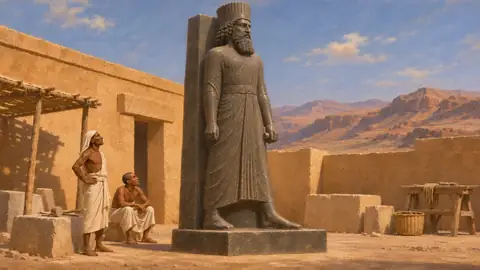
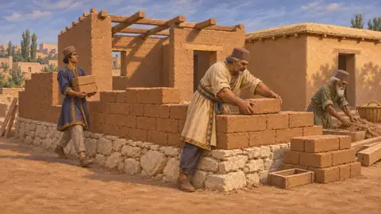

The SHAHANSHAH Encyclopedia
The Persian empire, 559 to 479 BCE
530 articles and 12 level histories, 2,703 painted sections: every battle, building, soldier, ship, ruler, people, place and royal order the game names, each part tagged by how we know it.
The History, level by level
 La tumba del fundadorNivel 1: La tumba del fundador, Pasargada, 530 a. e. c.
La tumba del fundadorNivel 1: La tumba del fundador, Pasargada, 530 a. e. c. El PortalanzaNivel 2: El Portalanza, Menfis, 525–524 a. e. c.
El PortalanzaNivel 2: El Portalanza, Menfis, 525–524 a. e. c. La MentiraNivel 3: La Mentira, Bagastana, 521 a. e. c.
La MentiraNivel 3: La Mentira, Bagastana, 521 a. e. c. La TerrazaNivel 4: La Terraza, Parsa, 521–509 a. e. c.
La TerrazaNivel 4: La Terraza, Parsa, 521–509 a. e. c. La CartaNivel 5: La Carta, Susa, 519–515 a. e. c.
La CartaNivel 5: La Carta, Susa, 519–515 a. e. c. El Puente de BarcasNivel 6: El Puente de Barcas, El Istro, 513 a. e. c.
El Puente de BarcasNivel 6: El Puente de Barcas, El Istro, 513 a. e. c. Sardes ardeNivel 7: Sardes arde, Sardes, 499–494 a. e. c.
Sardes ardeNivel 7: Sardes arde, Sardes, 499–494 a. e. c. La bahía de MaratónNivel 8: La bahía de Maratón, Maratón, 490 a. e. c.
La bahía de MaratónNivel 8: La bahía de Maratón, Maratón, 490 a. e. c. El CanalNivel 9: El Canal, Athos, 483–480 a. e. c.
El CanalNivel 9: El Canal, Athos, 483–480 a. e. c. Las Puertas CalientesNivel 10: Las Puertas Calientes, Termópilas, 480 a. e. c.
Las Puertas CalientesNivel 10: Las Puertas Calientes, Termópilas, 480 a. e. c. El finalNivel 11: El final, Platea, 480–479 a. e. c.
El finalNivel 11: El final, Platea, 480–479 a. e. c. MícalaEpílogo: Mícala, Mícala y el Helesponto, 479 a. e. c.
MícalaEpílogo: Mícala, Mícala y el Helesponto, 479 a. e. c.Batallas y acontecimientos 64
 La rebelión de Ciro contra los medosGuerra persa que derrocó al rey medo Astiages, hacia 553-550 a. e. c.
La rebelión de Ciro contra los medosGuerra persa que derrocó al rey medo Astiages, hacia 553-550 a. e. c. La batalla de PasargadaLa victoria de Ciro sobre Astiages el medo, probablemente cerca de Pasargada, en la Pérside, hacia 550 a. e. c.
La batalla de PasargadaLa victoria de Ciro sobre Astiages el medo, probablemente cerca de Pasargada, en la Pérside, hacia 550 a. e. c. La caída de SardesLa captura por Ciro de la capital lidia, arrebatada a Creso, hacia 547-546 a. e. c.
La caída de SardesLa captura por Ciro de la capital lidia, arrebatada a Creso, hacia 547-546 a. e. c. La conquista de Jonia por HárpagoCampaña persa contra las ciudades griegas de Asia Menor, hacia 546-545 a. e. c.
La conquista de Jonia por HárpagoCampaña persa contra las ciudades griegas de Asia Menor, hacia 546-545 a. e. c. La caída de BabiloniaLa captura por Ciro del reino babilonio en Opis y Babilonia, 539 a. e. c.
La caída de BabiloniaLa captura por Ciro del reino babilonio en Opis y Babilonia, 539 a. e. c. El regreso de los exiliados ordenado por CiroLa restauración por Ciro de dioses y pueblos tras tomar Babilonia, 539-538 a. e. c.
El regreso de los exiliados ordenado por CiroLa restauración por Ciro de dioses y pueblos tras tomar Babilonia, 539-538 a. e. c. La guerra de Ciro contra los masagetasLa última campaña de Ciro, contra la reina Tomiris más allá del Araxes, hacia 530 a. e. c.
La guerra de Ciro contra los masagetasLa última campaña de Ciro, contra la reina Tomiris más allá del Araxes, hacia 530 a. e. c. El entierro de CiroEl entierro del fundador del imperio en Pasargada, Pérside, hacia 530 a. e. c.
El entierro de CiroEl entierro del fundador del imperio en Pasargada, Pérside, hacia 530 a. e. c. La conquista de Egipto por CambisesInvasión y conquista persa del reino del faraón, Pelusio y Menfis, 525 a. e. c.
La conquista de Egipto por CambisesInvasión y conquista persa del reino del faraón, Pelusio y Menfis, 525 a. e. c. La batalla de PelusioLa victoria de Cambises sobre Psamético III en el borde oriental del delta del Nilo, 525 a. e. c.
La batalla de PelusioLa victoria de Cambises sobre Psamético III en el borde oriental del delta del Nilo, 525 a. e. c. El asedio de MenfisEl asedio y la captura por Cambises de la ciudad real de Egipto tras Pelusio, 525 a. e. c.
El asedio de MenfisEl asedio y la captura por Cambises de la ciudad real de Egipto tras Pelusio, 525 a. e. c. La muerte del toro ApisMuerte y entierro del toro sagrado de Menfis, sexto año de Cambises, 524 a. e. c.
La muerte del toro ApisMuerte y entierro del toro sagrado de Menfis, sexto año de Cambises, 524 a. e. c. La expedición abandonada contra CartagoLa guerra naval proyectada por Cambises contra Cartago, cancelada tras la caída de Egipto, hacia 525-524 a. e. c.
La expedición abandonada contra CartagoLa guerra naval proyectada por Cambises contra Cartago, cancelada tras la caída de Egipto, hacia 525-524 a. e. c. Las marchas de Cambises contra Amón y EtiopíaCampañas de Cambises en el desierto y el Nilo más allá de Egipto, probablemente hacia 524 a. e. c.
Las marchas de Cambises contra Amón y EtiopíaCampañas de Cambises en el desierto y el Nilo más allá de Egipto, probablemente hacia 524 a. e. c. La muerte de CambisesLa muerte del Rey en la marcha de regreso de Egipto, 522 a. e. c.
La muerte de CambisesLa muerte del Rey en la marcha de regreso de Egipto, 522 a. e. c. La muerte de GaumataDarío y seis nobles matan al rey reinante en Sikayauvati, en Media, en 522 a. e. c.
La muerte de GaumataDarío y seis nobles matan al rey reinante en Sikayauvati, en Media, en 522 a. e. c. Las rebeliones de 522-521 a. e. c.Alzamientos contra Darío en todo el imperio, de otoño del 522 a. e. c. a finales del 521 a. e. c.
Las rebeliones de 522-521 a. e. c.Alzamientos contra Darío en todo el imperio, de otoño del 522 a. e. c. a finales del 521 a. e. c. La rebelión de Nidintu-BelUn alzamiento babilonio bajo un nombre real, aplastado por Darío, Babilonia, 522 a. e. c.
La rebelión de Nidintu-BelUn alzamiento babilonio bajo un nombre real, aplastado por Darío, Babilonia, 522 a. e. c. La rebelión de FravartishAlzamiento medo contra Darío, extendido a Partia, Hircania y Sagartia, 522-521 a. e. c.
La rebelión de FravartishAlzamiento medo contra Darío, extendido a Partia, Hircania y Sagartia, 522-521 a. e. c. La rebelión de VahyazdataUn alzamiento en Pérside de un segundo pretendiente al nombre de Bardiya, 522-521 a. e. c.
La rebelión de VahyazdataUn alzamiento en Pérside de un segundo pretendiente al nombre de Bardiya, 522-521 a. e. c. La guerra en ArmeniaLos generales de Darío contra los rebeldes armenios, Armenia y Asiria, 522-521 a. e. c.
La guerra en ArmeniaLos generales de Darío contra los rebeldes armenios, Armenia y Asiria, 522-521 a. e. c. La rebelión de ArakhaSegundo alzamiento babilonio contra Darío, Babilonia, 521 a. e. c.
La rebelión de ArakhaSegundo alzamiento babilonio contra Darío, Babilonia, 521 a. e. c. La tercera revuelta elamitaAlzamiento de Elam bajo Athamaita, sofocado por Gobrias, hacia 520-519 a. e. c.
La tercera revuelta elamitaAlzamiento de Elam bajo Athamaita, sofocado por Gobrias, hacia 520-519 a. e. c. La tasación del tributo de DaríoLa división del imperio en distritos tributarios por Darío I, hacia 518 a. e. c.
La tasación del tributo de DaríoLa división del imperio en distritos tributarios por Darío I, hacia 518 a. e. c. La restauración por Darío de la Casa de la Vida en SaisOrden real de restaurar la Casa de la Vida, probablemente en Sais, en Egipto, hacia 519-518 a. e. c.
La restauración por Darío de la Casa de la Vida en SaisOrden real de restaurar la Casa de la Vida, probablemente en Sais, en Egipto, hacia 519-518 a. e. c. La campaña de Darío contra SkunkhaLa guerra de Darío contra los sakas de gorro puntiagudo de Asia central, hacia 519 a. e. c.
La campaña de Darío contra SkunkhaLa guerra de Darío contra los sakas de gorro puntiagudo de Asia central, hacia 519 a. e. c. La construcción de la terraza de ParsaLa plataforma palaciega de Darío I en Parsa (Persépolis), en la Pérside, iniciada hacia 518 a. e. c.
La construcción de la terraza de ParsaLa plataforma palaciega de Darío I en Parsa (Persépolis), en la Pérside, iniciada hacia 518 a. e. c. La carta de Darío en SusaLa inscripción de Darío I sobre la construcción de su palacio en Susa, probablemente de finales del siglo VI a. e. c.
La carta de Darío en SusaLa inscripción de Darío I sobre la construcción de su palacio en Susa, probablemente de finales del siglo VI a. e. c. El viaje de EscílaxUn viaje persa de exploración por el Indo y hacia el oeste hasta Egipto, hacia 517 a. e. c.
El viaje de EscílaxUn viaje persa de exploración por el Indo y hacia el oeste hasta Egipto, hacia 517 a. e. c. El canal de Darío del Nilo al Mar RojoCanal del Nilo al golfo de Suez, en Egipto, bajo Darío I, hacia 500 a. e. c.
El canal de Darío del Nilo al Mar RojoCanal del Nilo al golfo de Suez, en Egipto, bajo Darío I, hacia 500 a. e. c. La acuñación del dáricoLa primera acuñación real persa en oro y plata, probablemente en Sardes, hacia 510-500 a. e. c.
La acuñación del dáricoLa primera acuñación real persa en oro y plata, probablemente en Sardes, hacia 510-500 a. e. c. El asedio de BarcaAsedio persa de una ciudad griega de la Cirenaica, Libia, hacia 513 a. e. c.
El asedio de BarcaAsedio persa de una ciudad griega de la Cirenaica, Libia, hacia 513 a. e. c. La construcción de un puente sobre el BósforoEl puente de barcas de Darío entre Asia y Europa, hacia 513 a. e. c.
La construcción de un puente sobre el BósforoEl puente de barcas de Darío entre Asia y Europa, hacia 513 a. e. c. La campaña escita de DaríoLa marcha de Darío a través del Bósforo y el Istro contra los escitas, hacia 513 a. e. c.
La campaña escita de DaríoLa marcha de Darío a través del Bósforo y el Istro contra los escitas, hacia 513 a. e. c. La derrota de los getasLa conquista por Darío de un pueblo tracio durante la marcha hacia el Istro, hacia 513 a. e. c.
La derrota de los getasLa conquista por Darío de un pueblo tracio durante la marcha hacia el Istro, hacia 513 a. e. c. El debate en el puente del IstroConsejo de los tiranos griegos en el puente del Danubio, campaña escita, hacia 513 a. e. c.
El debate en el puente del IstroConsejo de los tiranos griegos en el puente del Danubio, campaña escita, hacia 513 a. e. c. El asedio de NaxosFallido ataque persa y milesio contra la isla de Naxos, 499 a. e. c.
El asedio de NaxosFallido ataque persa y milesio contra la isla de Naxos, 499 a. e. c. La revuelta de JoniaAlzamiento de las ciudades griegas de Asia Menor contra Darío, hacia 499-494 a. e. c.
La revuelta de JoniaAlzamiento de las ciudades griegas de Asia Menor contra Darío, hacia 499-494 a. e. c. El incendio de SardesIncursión jonia y ateniense contra la capital satrápica de Lidia, 498 a. e. c.
El incendio de SardesIncursión jonia y ateniense contra la capital satrápica de Lidia, 498 a. e. c. La batalla de ÉfesoVictoria persa sobre los jonios y sus aliados cerca de Éfeso, Jonia, 498 a. e. c.
La batalla de ÉfesoVictoria persa sobre los jonios y sus aliados cerca de Éfeso, Jonia, 498 a. e. c. La rebelión de ChipreAlzamiento de los reinos chipriotas contra Darío durante la Revuelta de Jonia, 498-497 a. e. c.
La rebelión de ChipreAlzamiento de los reinos chipriotas contra Darío durante la Revuelta de Jonia, 498-497 a. e. c. La batalla de LadeBatalla naval frente a Mileto que quebró la Revuelta de Jonia, 494 a. e. c.
La batalla de LadeBatalla naval frente a Mileto que quebró la Revuelta de Jonia, 494 a. e. c. La caída de MiletoCaptura persa de la principal ciudad de la Revuelta Jónica, Jonia, 494 a. e. c.
La caída de MiletoCaptura persa de la principal ciudad de la Revuelta Jónica, Jonia, 494 a. e. c. La expedición de Mardonio y el naufragio frente a AthosCampaña persa en Tracia y Macedonia, con una flota destrozada frente al monte Athos, 492 a. e. c.
La expedición de Mardonio y el naufragio frente a AthosCampaña persa en Tracia y Macedonia, con una flota destrozada frente al monte Athos, 492 a. e. c. La expedición de Datis y ArtafernesLa campaña marítima de Darío contra Eretria y Atenas a través del Egeo, 490 a. e. c.
La expedición de Datis y ArtafernesLa campaña marítima de Darío contra Eretria y Atenas a través del Egeo, 490 a. e. c. La caída de EretriaAsedio y captura persa de la ciudad eubea de Eretria, 490 a. e. c.
La caída de EretriaAsedio y captura persa de la ciudad eubea de Eretria, 490 a. e. c. La batalla de MaratónAtenienses y plateos contra un ejército persa, Ática, 490 a. e. c.
La batalla de MaratónAtenienses y plateos contra un ejército persa, Ática, 490 a. e. c. La excavación del canal del AthosEl canal para naves de Jerjes a través del istmo tras el monte Athos, hacia 483-480 a. e. c.
La excavación del canal del AthosEl canal para naves de Jerjes a través del istmo tras el monte Athos, hacia 483-480 a. e. c. Los puentes de Jerjes sobre el HelespontoDos puentes de barcas de Abidos a Europa, construidos para la invasión de Grecia, 481-480 a. e. c.
Los puentes de Jerjes sobre el HelespontoDos puentes de barcas de Abidos a Europa, construidos para la invasión de Grecia, 481-480 a. e. c. La travesía del HelespontoEl ejército de Jerjes pasa de Asia a Europa cerca de Abidos, 480 a. e. c.
La travesía del HelespontoEl ejército de Jerjes pasa de Asia a Europa cerca de Abidos, 480 a. e. c. La invasión de Grecia por JerjesCampaña persa por tierra y mar contra la Grecia continental, 480-479 a. e. c.
La invasión de Grecia por JerjesCampaña persa por tierra y mar contra la Grecia continental, 480-479 a. e. c. La revista de tropas en DoriscosRecuento e inspección de su ejército y su flota por Jerjes en Tracia, 480 a. e. c.
La revista de tropas en DoriscosRecuento e inspección de su ejército y su flota por Jerjes en Tracia, 480 a. e. c. La tormenta frente a MagnesiaTormenta que destrozó parte de la flota de Jerjes en la costa de Magnesia, Tesalia, 480 a. e. c.
La tormenta frente a MagnesiaTormenta que destrozó parte de la flota de Jerjes en la costa de Magnesia, Tesalia, 480 a. e. c. La batalla de las TermópilasBatalla entre el ejército de Jerjes y los griegos en el paso de las Termópilas, 480 a. e. c.
La batalla de las TermópilasBatalla entre el ejército de Jerjes y los griegos en el paso de las Termópilas, 480 a. e. c. La batalla de ArtemisioBatalla naval frente al norte de Eubea entre la flota de Jerjes y los griegos, 480 a. e. c.
La batalla de ArtemisioBatalla naval frente al norte de Eubea entre la flota de Jerjes y los griegos, 480 a. e. c. La toma persa de AtenasLa toma e incendio de Atenas y su Acrópolis por Jerjes, finales del verano de 480 a. e. c.
La toma persa de AtenasLa toma e incendio de Atenas y su Acrópolis por Jerjes, finales del verano de 480 a. e. c. La batalla de SalaminaBatalla naval en el estrecho entre Salamina y el Ática, 480 a. e. c.
La batalla de SalaminaBatalla naval en el estrecho entre Salamina y el Ática, 480 a. e. c. El regreso de Jerjes a AsiaLa retirada del Rey de Grecia a Sardes tras la derrota de Salamina, otoño de 480 a. e. c.
El regreso de Jerjes a AsiaLa retirada del Rey de Grecia a Sardes tras la derrota de Salamina, otoño de 480 a. e. c. La embajada de Alejandro de Macedonia a AtenasUna oferta de paz persa llevada a Atenas por el rey de Macedonia, 479 a. e. c.
La embajada de Alejandro de Macedonia a AtenasUna oferta de paz persa llevada a Atenas por el rey de Macedonia, 479 a. e. c. La toma de Atenas por MardonioSegunda ocupación persa e incendio de Atenas, verano del 479 a. e. c.
La toma de Atenas por MardonioSegunda ocupación persa e incendio de Atenas, verano del 479 a. e. c. La muerte de MasistioCombate de caballería al pie del monte Citerón, cerca de Eritras, en Beocia, 479 a. e. c.
La muerte de MasistioCombate de caballería al pie del monte Citerón, cerca de Eritras, en Beocia, 479 a. e. c. La batalla de PlateaVictoria griega sobre el ejército de Mardonio cerca de Platea, en Beocia, 479 a. e. c.
La batalla de PlateaVictoria griega sobre el ejército de Mardonio cerca de Platea, en Beocia, 479 a. e. c. La batalla de MícalaDesembarco griego contra un campamento persa en la costa jonia frente a Samos, 479 a. e. c.
La batalla de MícalaDesembarco griego contra un campamento persa en la costa jonia frente a Samos, 479 a. e. c. El asedio de SestoAsedio ateniense de la plaza fuerte persa en el Helesponto, 479-478 a. e. c.
El asedio de SestoAsedio ateniense de la plaza fuerte persa en el Helesponto, 479-478 a. e. c.Edificios 112
 CaminoSendas y red de caminos del Rey, imperio aqueménida, siglos VI-V a. e. c.
CaminoSendas y red de caminos del Rey, imperio aqueménida, siglos VI-V a. e. c. Parcela de viviendaViviendas corrientes del imperio aqueménida, hacia 559-479 a. e. c.
Parcela de viviendaViviendas corrientes del imperio aqueménida, hacia 559-479 a. e. c. Granja de cebadaCampos de cereal de Pérside y del resto del imperio, siglos VI-V a. e. c.
Granja de cebadaCampos de cereal de Pérside y del resto del imperio, siglos VI-V a. e. c. GraneroGraneros reales del Imperio aqueménida, hacia 530-479 a. e. c.
GraneroGraneros reales del Imperio aqueménida, hacia 530-479 a. e. c. BazarMercados e intercambio de bienes en el Imperio aqueménida, siglos VI a V a. e. c.
BazarMercados e intercambio de bienes en el Imperio aqueménida, siglos VI a V a. e. c. PozoPozos excavados hasta el agua subterránea, fuente básica de agua del Imperio aqueménida, siglos VI-V a. e. c.
PozoPozos excavados hasta el agua subterránea, fuente básica de agua del Imperio aqueménida, siglos VI-V a. e. c. Plátano orientalGran árbol de sombra de los jardines persas y los caminos lidios, siglos VI-V a. e. c.
Plátano orientalGran árbol de sombra de los jardines persas y los caminos lidios, siglos VI-V a. e. c. Altar del fuegoSoporte escalonado de piedra para un fuego al aire libre en el culto real persa, Pérside, hacia 530-479 a. e. c.
Altar del fuegoSoporte escalonado de piedra para un fuego al aire libre en el culto real persa, Pérside, hacia 530-479 a. e. c. Canal de aguaCanales de piedra tallada con estanques en el jardín, Pasargada, hacia 540-530 a. e. c.
Canal de aguaCanales de piedra tallada con estanques en el jardín, Pasargada, hacia 540-530 a. e. c. Hilera de cipresesHileras de coníferas en el arte y los jardines aqueménidas, Persépolis y Pasargada, 530-480 a. e. c.
Hilera de cipresesHileras de coníferas en el arte y los jardines aqueménidas, Persépolis y Pasargada, 530-480 a. e. c. Piedra inscritaInscripciones reales en persa antiguo, elamita y babilonio, hacia 520-480 a. e. c.
Piedra inscritaInscripciones reales en persa antiguo, elamita y babilonio, hacia 520-480 a. e. c. Pórtico de columnasPórtico de columnas de los palacios reales persas, hacia 540-480 a. e. c.
Pórtico de columnasPórtico de columnas de los palacios reales persas, hacia 540-480 a. e. c. Relieve realPaneles de piedra tallada de la escalinata, con portadores de ofrendas y guardias, Persépolis, hacia 515-480 a. e. c.
Relieve realPaneles de piedra tallada de la escalinata, con portadores de ofrendas y guardias, Persépolis, hacia 515-480 a. e. c. Toros de la puertaToros colosales de piedra que flanquean las puertas reales, Pasargada y Persépolis, hacia 540-450 a. e. c.
Toros de la puertaToros colosales de piedra que flanquean las puertas reales, Pasargada y Persépolis, hacia 540-450 a. e. c. Panel de ladrillo vidriadoFrisos de ladrillo vidriado moldeado del Palacio de Darío en Susa, finales del siglo VI a. e. c.
Panel de ladrillo vidriadoFrisos de ladrillo vidriado moldeado del Palacio de Darío en Susa, finales del siglo VI a. e. c. Pareja de esfingesParejas de esfinges de piedra en los accesos a los templos egipcios, Sais y Menfis, siglo VI a. e. c.
Pareja de esfingesParejas de esfinges de piedra en los accesos a los templos egipcios, Sais y Menfis, siglo VI a. e. c. ObeliscoFuste monolítico de granito erigido ante los templos egipcios, ya muy antiguo en el 525 a. e. c.
ObeliscoFuste monolítico de granito erigido ante los templos egipcios, ya muy antiguo en el 525 a. e. c. KoreEstatua griega arcaica de mármol de una doncella de pie, hacia 650-480 a. e. c.
KoreEstatua griega arcaica de mármol de una doncella de pie, hacia 650-480 a. e. c. HermaPilar de Hermes en los caminos y puertas de Atenas, desde en torno al 520 a. e. c.
HermaPilar de Hermes en los caminos y puertas de Atenas, desde en torno al 520 a. e. c. León de piedraEscultura de leones de la Sardes lidia y de las ciudades reales persas, siglos VI-V a. e. c.
León de piedraEscultura de leones de la Sardes lidia y de las ciudades reales persas, siglos VI-V a. e. c.
Statue of DariusEgyptian-made statue of Darius I from the gate at Susa, late 6th or early 5th century BCE Sala de banquetesBanquetes de las casas persas y de la corte real, siglos VI y V a. e. c.
Sala de banquetesBanquetes de las casas persas y de la corte real, siglos VI y V a. e. c. Patio de juegosDados, tabas y juegos de pelota en Sardes y en todo el imperio, hacia 550-479 a. e. c.
Patio de juegosDados, tabas y juegos de pelota en Sardes y en todo el imperio, hacia 550-479 a. e. c. Atrio del temploPatio abierto de un templo egipcio, Menfis, hacia 525 a. e. c.
Atrio del temploPatio abierto de un templo egipcio, Menfis, hacia 525 a. e. c. Pabellón del jardínRefugio de columnas en un jardín real amurallado, Pasargada, siglo VI a. e. c.
Pabellón del jardínRefugio de columnas en un jardín real amurallado, Pasargada, siglo VI a. e. c. Parque de cazaParques reales y satrapales amurallados y poblados de caza, Imperio persa, siglos VI-V a. e. c.
Parque de cazaParques reales y satrapales amurallados y poblados de caza, Imperio persa, siglos VI-V a. e. c. Muelle de las fiestasEmbarcadero para las barcas de las fiestas en el Nilo, Egipto, siglos VI-V a. e. c.
Muelle de las fiestasEmbarcadero para las barcas de las fiestas en el Nilo, Egipto, siglos VI-V a. e. c. Teatro de DionisoTeatro al aire libre en la ladera sur de la Acrópolis, Atenas, siglos VI a V a. e. c.
Teatro de DionisoTeatro al aire libre en la ladera sur de la Acrópolis, Atenas, siglos VI a V a. e. c. GimnasioCampo de entrenamiento griego para atletas y jóvenes ciudadanos, siglos VI-V a. e. c.
GimnasioCampo de entrenamiento griego para atletas y jóvenes ciudadanos, siglos VI-V a. e. c. Casa del simposioEl simposio griego y sus salas; un festín tebano en honor de Mardonio, 479 a. e. c.
Casa del simposioEl simposio griego y sus salas; un festín tebano en honor de Mardonio, 479 a. e. c. SantuarioLugares de ofrenda y culto en el imperio aqueménida, hacia 550-479 a. e. c.
SantuarioLugares de ofrenda y culto en el imperio aqueménida, hacia 550-479 a. e. c. Casa de los magosCasa de los guardianes junto a la Tumba de Ciro, Pasargada, desde aproximadamente el 530 a. e. c.
Casa de los magosCasa de los guardianes junto a la Tumba de Ciro, Pasargada, desde aproximadamente el 530 a. e. c. Casa del sanadorSanadores en el Imperio persa y sus tierras sometidas, siglos VI-V a. e. c.
Casa del sanadorSanadores en el Imperio persa y sus tierras sometidas, siglos VI-V a. e. c. LetrinaAsiento de letrina doméstica de un tipo antiguo egipcio y de Oriente Próximo, en uso en los siglos VI-V a. e. c.
LetrinaAsiento de letrina doméstica de un tipo antiguo egipcio y de Oriente Próximo, en uso en los siglos VI-V a. e. c. Casa del aguaAgua sacada del pozo para lavarse, según una costumbre persa, siglos VI-V a. e. c.
Casa del aguaAgua sacada del pozo para lavarse, según una costumbre persa, siglos VI-V a. e. c. Baño del palacioAseos y desagües en los palacios aqueménidas, Persépolis, hacia 518-465 a. e. c.
Baño del palacioAseos y desagües en los palacios aqueménidas, Persépolis, hacia 518-465 a. e. c. Casa del médicoMédicos egipcios al servicio de los reyes persas, hacia 540-500 a. e. c.
Casa del médicoMédicos egipcios al servicio de los reyes persas, hacia 540-500 a. e. c. CementerioTumbas y costumbres funerarias de los persas y sus súbditos, hacia 550-479 a. e. c.
CementerioTumbas y costumbres funerarias de los persas y sus súbditos, hacia 550-479 a. e. c. Cuerpo de guardiaPaso, puerta o fuerte vigilado del Imperio aqueménida, siglos VI-V a. e. c.
Cuerpo de guardiaPaso, puerta o fuerte vigilado del Imperio aqueménida, siglos VI-V a. e. c. TribunalSede de los jueces del Rey, Imperio aqueménida, siglos VI a V a. e. c.
TribunalSede de los jueces del Rey, Imperio aqueménida, siglos VI a V a. e. c. Casa del Ojo del ReyEl Ojo del Rey, un vigilante real conocido por los autores griegos, siglos VI-V a. e. c.
Casa del Ojo del ReyEl Ojo del Rey, un vigilante real conocido por los autores griegos, siglos VI-V a. e. c. Desagüe de piedraCanales cubiertos para el agua de lluvia y las aguas residuales, terraza de Persépolis, hacia 518-460 a. e. c.
Desagüe de piedraCanales cubiertos para el agua de lluvia y las aguas residuales, terraza de Persépolis, hacia 518-460 a. e. c. EscribaníaOficina de escribas para los registros y los derechos reales, Imperio aqueménida, hacia 530-479 a. e. c.
EscribaníaOficina de escribas para los registros y los derechos reales, Imperio aqueménida, hacia 530-479 a. e. c. LeñadorTala y suministro de madera en el imperio aqueménida, hacia 530-479 a. e. c.
LeñadorTala y suministro de madera en el imperio aqueménida, hacia 530-479 a. e. c. BarreroExtracción de tierra y arcilla para ladrillos, vasijas y tablillas, Imperio persa, siglos VI-V a. e. c.
BarreroExtracción de tierra y arcilla para ladrillos, vasijas y tablillas, Imperio persa, siglos VI-V a. e. c. AlfareríaTalleres de cerámica de uso diario y de almacenaje en el Imperio persa, siglos VI-V a. e. c.
AlfareríaTalleres de cerámica de uso diario y de almacenaje en el Imperio persa, siglos VI-V a. e. c. Cantera de calizaCanteras que abastecieron los palacios y tumbas aqueménidas, hacia 550-480 a. e. c.
Cantera de calizaCanteras que abastecieron los palacios y tumbas aqueménidas, hacia 550-480 a. e. c. Patio de almacénAlmacenes reales de materiales y bienes en el Imperio persa, hacia 530-479 a. e. c.
Patio de almacénAlmacenes reales de materiales y bienes en el Imperio persa, hacia 530-479 a. e. c. CerveceríaTaller de cerveza de cebada y escanda, Menfis, Egipto, hacia 525 a. e. c.
CerveceríaTaller de cerveza de cebada y escanda, Menfis, Egipto, hacia 525 a. e. c. Taller del perfumistaFabricantes de aceites perfumados y ungüentos en Sardes, Lidia, hacia 500 a. e. c.
Taller del perfumistaFabricantes de aceites perfumados y ungüentos en Sardes, Lidia, hacia 500 a. e. c. Campo de linoPlanta textil para lienzo y cuerda, en el nivel de Athos, 483-480 a. e. c.
Campo de linoPlanta textil para lienzo y cuerda, en el nivel de Athos, 483-480 a. e. c. CordeleríaLa fabricación de los cables para los puentes de Jerjes sobre el Helesponto, hacia 483-480 a. e. c.
CordeleríaLa fabricación de los cables para los puentes de Jerjes sobre el Helesponto, hacia 483-480 a. e. c. Huerto frutalHuertos frutales de regadío del Imperio aqueménida, siglos VI y V a. e. c.
Huerto frutalHuertos frutales de regadío del Imperio aqueménida, siglos VI y V a. e. c. ViñedoViticultura y elaboración de vino en las fincas del imperio persa, siglos VI a V a. e. c.
ViñedoViticultura y elaboración de vino en las fincas del imperio persa, siglos VI a V a. e. c. Corral de ganadoPastoreo de ovejas y cabras en todo el Imperio aqueménida, siglos VI a V a. e. c.
Corral de ganadoPastoreo de ovejas y cabras en todo el Imperio aqueménida, siglos VI a V a. e. c. Pabellón de cazadoresLa caza de animales y contra las fieras peligrosas en el mundo aqueménida, siglos VI-V a. C.
Pabellón de cazadoresLa caza de animales y contra las fieras peligrosas en el mundo aqueménida, siglos VI-V a. C. Taller del tejedorHilado y tejido de lana y lino en todo el Imperio persa, hacia 550-479 a. e. c.
Taller del tejedorHilado y tejido de lana y lino en todo el Imperio persa, hacia 550-479 a. e. c. Patio de caravanasComercio por tierra y transporte con animales de carga en el imperio aqueménida, hacia 550-479 a. e. c.
Patio de caravanasComercio por tierra y transporte con animales de carga en el imperio aqueménida, hacia 550-479 a. e. c. Jardín ornamentalJardín persa amurallado con árboles y canales de agua, hacia 540 a. e. c.
Jardín ornamentalJardín persa amurallado con árboles y canales de agua, hacia 540 a. e. c.
Builders' YardThe brickmakers, carpenters and labourers who raised ordinary buildings, about 550-480 BCE Campamento de canterosCanteros que construyeron las residencias reales de Pérside y Elam, hacia 550-480 a. e. c.
Campamento de canterosCanteros que construyeron las residencias reales de Pérside y Elam, hacia 550-480 a. e. c. Tumba de CiroTumba de piedra con tejado a dos aguas de Ciro el Grande en Pasargada, Pérside, hacia 540-530 a. e. c.
Tumba de CiroTumba de piedra con tejado a dos aguas de Ciro el Grande en Pasargada, Pérside, hacia 540-530 a. e. c. Sala de audienciasSala de columnas de Ciro, conocida como Palacio S, en Pasargada, hacia 540-530 a. e. c.
Sala de audienciasSala de columnas de Ciro, conocida como Palacio S, en Pasargada, hacia 540-530 a. e. c. Palacio residencialPalacio P de Pasargada, comenzado bajo Ciro antes de 530 a. e. c. y terminado más tarde
Palacio residencialPalacio P de Pasargada, comenzado bajo Ciro antes de 530 a. e. c. y terminado más tarde Jardín realJardín con canales de piedra para el agua junto a los palacios de Pasargada, hacia 540-530 a. e. c.
Jardín realJardín con canales de piedra para el agua junto a los palacios de Pasargada, hacia 540-530 a. e. c. El Relieve del ReyRelieve tallado e inscripción trilingüe de Darío I, Bagastana, hacia 520 a. e. c.
El Relieve del ReyRelieve tallado e inscripción trilingüe de Darío I, Bagastana, hacia 520 a. e. c. Terraza realPlataforma de piedra de la ciudad palaciega de Darío en Parsa (Persépolis), iniciada hacia 518 a. e. c.
Terraza realPlataforma de piedra de la ciudad palaciega de Darío en Parsa (Persépolis), iniciada hacia 518 a. e. c. Palacio de DaríoPalacio y sala de columnas de Darío I en Susa, en Elam, comenzados hacia 520-518 a. e. c.
Palacio de DaríoPalacio y sala de columnas de Darío I en Susa, en Elam, comenzados hacia 520-518 a. e. c. Horno de ladrillo vidriadoTalleres de revestimientos de ladrillo coloreado para el palacio de Darío en Susa, hacia 520-500 a. e. c.
Horno de ladrillo vidriadoTalleres de revestimientos de ladrillo coloreado para el palacio de Darío en Susa, hacia 520-500 a. e. c. Puente de barcasPuente de pontones de Darío sobre el bajo Danubio, construido por griegos jonios, hacia el 513 a. e. c.
Puente de barcasPuente de pontones de Darío sobre el bajo Danubio, construido por griegos jonios, hacia el 513 a. e. c. Carpinteros de ribera joniosTripulaciones y carpinteros griegos que tendieron un puente sobre el Istro para Darío, hacia 513 a. e. c.
Carpinteros de ribera joniosTripulaciones y carpinteros griegos que tendieron un puente sobre el Istro para Darío, hacia 513 a. e. c. Pabellón del ReyEl asiento real desde el que Jerjes contempló la batalla de las Termópilas, 480 a. e. c.
Pabellón del ReyEl asiento real desde el que Jerjes contempló la batalla de las Termópilas, 480 a. e. c. Yeguada niseaPastos reales para caballos en la llanura nisea de Media, siglos VI y V a. e. c.
Yeguada niseaPastos reales para caballos en la llanura nisea de Media, siglos VI y V a. e. c. Entierro del ApisGalerías funerarias excavadas en la roca para los toros sagrados Apis en Saqqara, Egipto; entierro de 524 a. e. c.
Entierro del ApisGalerías funerarias excavadas en la roca para los toros sagrados Apis en Saqqara, Egipto; entierro de 524 a. e. c. Canal de JerjesCanal navegable a través del istmo del Athos, en el norte del Egeo, excavado hacia el 483-480 a. e. c.
Canal de JerjesCanal navegable a través del istmo del Athos, en el norte del Egeo, excavado hacia el 483-480 a. e. c. Ciudadela de SardesAcrópolis de los reyes lidios y de los sátrapas persas en Sardes, siglos VI-IV a. e. c.
Ciudadela de SardesAcrópolis de los reyes lidios y de los sátrapas persas en Sardes, siglos VI-IV a. e. c. Refinería de oro del PactoloTaller de refinado del oro fluvial junto al Pactolo, en Sardes, Lidia, siglo VI a. e. c.
Refinería de oro del PactoloTaller de refinado del oro fluvial junto al Pactolo, en Sardes, Lidia, siglo VI a. e. c. Ceca realTaller donde se acuñaban las monedas del arquero del Rey, probablemente en Sardes, hacia 500 a. e. c.
Ceca realTaller donde se acuñaban las monedas del arquero del Rey, probablemente en Sardes, hacia 500 a. e. c. Posta del caminoPosta en los caminos del Rey para funcionarios, correos y tropas, hacia 500 a. e. c.
Posta del caminoPosta en los caminos del Rey para funcionarios, correos y tropas, hacia 500 a. e. c. Scout PostRiders sent ahead to look at the land and the enemy, Achaemenid armies, 6th-5th centuries BCE
Scout PostRiders sent ahead to look at the land and the enemy, Achaemenid armies, 6th-5th centuries BCE Depósito de suministrosReservas de alimentos dispuestas a lo largo del camino de Jerjes por Tracia y Macedonia, hacia 483-480 a. e. c.
Depósito de suministrosReservas de alimentos dispuestas a lo largo del camino de Jerjes por Tracia y Macedonia, hacia 483-480 a. e. c. Fuerte de MardonioFortaleza persa de madera junto al río Asopo, en Beocia, 479 a. e. c.
Fuerte de MardonioFortaleza persa de madera junto al río Asopo, en Beocia, 479 a. e. c. Campamento navalLa flota persa varada en la bahía de Maratón, Ática, 490 a. e. c.
Campamento navalLa flota persa varada en la bahía de Maratón, Ática, 490 a. e. c. CuartelAlojamiento y abastecimiento de los soldados del Imperio aqueménida, siglos VI a V a. e. c.
CuartelAlojamiento y abastecimiento de los soldados del Imperio aqueménida, siglos VI a V a. e. c. Campo de tiro con arcoCampo de entrenamiento con el arco, arma principal de los soldados de a pie persas, siglos VI-V a. e. c.
Campo de tiro con arcoCampo de entrenamiento con el arco, arma principal de los soldados de a pie persas, siglos VI-V a. e. c. Establo de caballeríaAlojamiento y alimentación de los caballos de la caballería del Rey, Imperio persa, siglos VI-V a. e. c.
Establo de caballeríaAlojamiento y alimentación de los caballos de la caballería del Rey, Imperio persa, siglos VI-V a. e. c. Campo de convocatoriaLugar de reunión donde las levas persas se congregaban para el recuento y la revista, hacia 530-479 a. e. c.
Campo de convocatoriaLugar de reunión donde las levas persas se congregaban para el recuento y la revista, hacia 530-479 a. e. c. ArmeríaTalleres y almacenes de las armas del Rey, Imperio persa, hacia 550-479 a. e. c.
ArmeríaTalleres y almacenes de las armas del Rey, Imperio persa, hacia 550-479 a. e. c. AtalayaPuesto de vigía y de señales en caminos y fronteras, Imperio persa, siglos VI-V a. e. c.
AtalayaPuesto de vigía y de señales en caminos y fronteras, Imperio persa, siglos VI-V a. e. c. Muralla defensivaMuros de adobe sobre cimientos de piedra, Oriente Próximo y el Egeo, siglos VI a V a. e. c.
Muralla defensivaMuros de adobe sobre cimientos de piedra, Oriente Próximo y el Egeo, siglos VI a V a. e. c. Templo Antiguo de AteneaTemplo de Atenea Polias en la Acrópolis de Atenas, incendiado por los persas en el 480 a. e. c.
Templo Antiguo de AteneaTemplo de Atenea Polias en la Acrópolis de Atenas, incendiado por los persas en el 480 a. e. c. El Partenón AntiguoTemplo de mármol inacabado de Atenea en la Acrópolis de Atenas, hacia 490-480 a. e. c.
El Partenón AntiguoTemplo de mármol inacabado de Atenea en la Acrópolis de Atenas, hacia 490-480 a. e. c. Santuario de HeraRecinto de Hera ante Platea, en Beocia, un punto de referencia de la batalla del 479 a. e. c.
Santuario de HeraRecinto de Hera ante Platea, en Beocia, un punto de referencia de la batalla del 479 a. e. c. Recinto de DeméterSantuario de Deméter Eleusinia en el campo de batalla de Platea, Beocia, 479 a. e. c.
Recinto de DeméterSantuario de Deméter Eleusinia en el campo de batalla de Platea, Beocia, 479 a. e. c. La Empalizada de MaderaEmpalizada de madera a la entrada de la Acrópolis de Atenas, 480 a. e. c.
La Empalizada de MaderaEmpalizada de madera a la entrada de la Acrópolis de Atenas, 480 a. e. c. Altares y estatuasOfrendas y pequeños santuarios en la Acrópolis de Atenas, saqueada en el 480 a. e. c.
Altares y estatuasOfrendas y pequeños santuarios en la Acrópolis de Atenas, saqueada en el 480 a. e. c. Casa vacíaUna casa abandonada en la ciudad baja de Atenas, 480-479 a. e. c.
Casa vacíaUna casa abandonada en la ciudad baja de Atenas, 480-479 a. e. c. Casa de SestoUna casa de Sesto, en el Helesponto, asediada por los atenienses, 479-478 a. e. c.
Casa de SestoUna casa de Sesto, en el Helesponto, asediada por los atenienses, 479-478 a. e. c. El Olivo de AteneaOlivo sagrado de la Acrópolis de Atenas, quemado por los persas en 480 a. e. c.
El Olivo de AteneaOlivo sagrado de la Acrópolis de Atenas, quemado por los persas en 480 a. e. c. Torre de la puertaPuertas fortificadas y ceremoniales del mundo aqueménida, hacia 550-479 a. e. c.
Torre de la puertaPuertas fortificadas y ceremoniales del mundo aqueménida, hacia 550-479 a. e. c. Puesto de vigíaGuardia nocturna, incendios y reparaciones en las ciudades del Imperio aqueménida, siglos VI-V a. e. c.
Puesto de vigíaGuardia nocturna, incendios y reparaciones en las ciudades del Imperio aqueménida, siglos VI-V a. e. c. Campamento de saqueadores de las colinasCampamento de los pueblos montañeses de Pérside y los Zagros, siglos VI-V a. e. c.
Campamento de saqueadores de las colinasCampamento de los pueblos montañeses de Pérside y los Zagros, siglos VI-V a. e. c. Escalinata del ríoEmbarcadero ribereño para lavar y hacer la colada en el Nilo, Menfis, hacia 525 a. e. c.
Escalinata del ríoEmbarcadero ribereño para lavar y hacer la colada en el Nilo, Menfis, hacia 525 a. e. c. Fuente públicaFuente pública techada de las ciudades griegas, siglos VI y V a. e. c.
Fuente públicaFuente pública techada de las ciudades griegas, siglos VI y V a. e. c. NecrópolisLos cementerios en el linde del desierto occidental de Menfis, Egipto, hacia 525-524 a. e. c.
NecrópolisLos cementerios en el linde del desierto occidental de Menfis, Egipto, hacia 525-524 a. e. c. Túmulo realTúmulos funerarios lidios de Bin Tepe, al norte de Sardes, siglos VII a IV a. e. c.
Túmulo realTúmulos funerarios lidios de Bin Tepe, al norte de Sardes, siglos VII a IV a. e. c. Cementerio junto al caminoCementerios griegos junto a los caminos, fuera de las murallas, en Ática y Beocia, hacia 600-479 a. e. c.
Cementerio junto al caminoCementerios griegos junto a los caminos, fuera de las murallas, en Ática y Beocia, hacia 600-479 a. e. c. Túmulo funerarioTúmulo de tierra alzado sobre los muertos, costumbre tracia atestiguada en Athos, 483-480 a. e. c.
Túmulo funerarioTúmulo de tierra alzado sobre los muertos, costumbre tracia atestiguada en Athos, 483-480 a. e. c. Astillero fenicioConstructores navales fenicios de la flota del Rey, Sidón y Tiro, hacia 525-479 a. e. c.
Astillero fenicioConstructores navales fenicios de la flota del Rey, Sidón y Tiro, hacia 525-479 a. e. c. PalmeralPalmerales en la llanura aluvial del Nilo, en torno a Menfis, Egipto, hacia el 525 a. e. c.
PalmeralPalmerales en la llanura aluvial del Nilo, en torno a Menfis, Egipto, hacia el 525 a. e. c. OlivarOlivares y prensas de aceite de Grecia y las costas del Egeo, hacia 490-479 a. e. c.
OlivarOlivares y prensas de aceite de Grecia y las costas del Egeo, hacia 490-479 a. e. c. Consultorio griegoSala de trabajo de un médico griego, en el mundo griego, hacia 520-479 a. e. c.
Consultorio griegoSala de trabajo de un médico griego, en el mundo griego, hacia 520-479 a. e. c.Soldados y naves 49
 Lancero persaSoldado de infantería del ejército del Rey aqueménida, hacia 550-479 a. e. c.
Lancero persaSoldado de infantería del ejército del Rey aqueménida, hacia 550-479 a. e. c. Arquero persaSoldado de a pie armado con arco del ejército persa aqueménida, hacia 550-479 a. e. c.
Arquero persaSoldado de a pie armado con arco del ejército persa aqueménida, hacia 550-479 a. e. c. Jinete persaSoldados montados del ejército del Rey aqueménida, siglos VI a V a. e. c.
Jinete persaSoldados montados del ejército del Rey aqueménida, siglos VI a V a. e. c. ScoutMounted scouts of the King's armies, 6th-5th centuries BCE
ScoutMounted scouts of the King's armies, 6th-5th centuries BCE Lancero de levaSoldado de a pie reclutado por obligación para el ejército del Rey aqueménida, hacia 550-479 a. e. c.
Lancero de levaSoldado de a pie reclutado por obligación para el ejército del Rey aqueménida, hacia 550-479 a. e. c. Arquero de levaFlechero reclutado por leva real para el ejército del Rey persa, siglos VI-V a. e. c.
Arquero de levaFlechero reclutado por leva real para el ejército del Rey persa, siglos VI-V a. e. c. Lancero del ReySoldado de a pie persa del ejército y la guardia reales, hacia 530-479 a. e. c.
Lancero del ReySoldado de a pie persa del ejército y la guardia reales, hacia 530-479 a. e. c. InmortalInfantería persa escogida de diez mil hombres, tal como la describe Heródoto, en 480 a. e. c.
InmortalInfantería persa escogida de diez mil hombres, tal como la describe Heródoto, en 480 a. e. c. Arquero sakaFlechero de los pueblos saka de Asia Central en el ejército aqueménida, hacia 520-479 a. e. c.
Arquero sakaFlechero de los pueblos saka de Asia Central en el ejército aqueménida, hacia 520-479 a. e. c. Arquero a caballo medoArquero montado de Media en el ejército aqueménida, hacia 550-479 a. e. c.
Arquero a caballo medoArquero montado de Media en el ejército aqueménida, hacia 550-479 a. e. c. Jinete árabe en camelloArqueros árabes montados en camellos en el ejército del Rey persa, hacia 525-479 a. e. c.
Jinete árabe en camelloArqueros árabes montados en camellos en el ejército del Rey persa, hacia 525-479 a. e. c. Lancero cisioInfantería de Susa y su llanura en el ejército de Jerjes, 480 a. e. c.
Lancero cisioInfantería de Susa y su llanura en el ejército de Jerjes, 480 a. e. c. Lancero bactrianoSoldado de infantería de Bactria en el ejército real persa, hacia 520-479 a. e. c.
Lancero bactrianoSoldado de infantería de Bactria en el ejército real persa, hacia 520-479 a. e. c. Infante de marina fenicioCombatiente de las naves fenicias de la flota del Rey, hacia 525-479 a. e. c.
Infante de marina fenicioCombatiente de las naves fenicias de la flota del Rey, hacia 525-479 a. e. c. Infante de marina egipcioCombatientes armados de la escuadra egipcia de la flota de Jerjes, 480-479 a. e. c.
Infante de marina egipcioCombatientes armados de la escuadra egipcia de la flota de Jerjes, 480-479 a. e. c. Arquero indioFlechero de la provincia aqueménida de Hindush, en el valle del Indo, hacia 515-479 a. e. c.
Arquero indioFlechero de la provincia aqueménida de Hindush, en el valle del Indo, hacia 515-479 a. e. c. Arquero del ReyArquero persa adiestrado del ejército del Rey, Persia, hacia 550-479 a. e. c.
Arquero del ReyArquero persa adiestrado del ejército del Rey, Persia, hacia 550-479 a. e. c. Jinete del ReyCaballería persa escogida que cabalgaba cerca del Rey, hacia 530-479 a. e. c.
Jinete del ReyCaballería persa escogida que cabalgaba cerca del Rey, hacia 530-479 a. e. c. Arquero a caballo del ReyArqueros montados del ejército real aqueménida, hacia 550-479 a. e. c.
Arquero a caballo del ReyArqueros montados del ejército real aqueménida, hacia 550-479 a. e. c. Ariete cubierto persaAriete techado para derribar muros y puertas, Oriente Próximo, siglos IX-V a. e. c.
Ariete cubierto persaAriete techado para derribar muros y puertas, Oriente Próximo, siglos IX-V a. e. c. Hazarapatish«Comandante de mil» persa, rango de oficial y cargo cortesano, siglos VI-V a. e. c.
Hazarapatish«Comandante de mil» persa, rango de oficial y cargo cortesano, siglos VI-V a. e. c. Saqueador de las colinasSaqueadores con armamento ligero de las montañas y los márgenes del imperio, siglos VI-V a. e. c.
Saqueador de las colinasSaqueadores con armamento ligero de las montañas y los márgenes del imperio, siglos VI-V a. e. c. Mercenario carioSoldados carios contratados por los reyes de Egipto y en guerra con Persia, hacia 664-494 a. e. c.
Mercenario carioSoldados carios contratados por los reyes de Egipto y en guerra con Persia, hacia 664-494 a. e. c. Hoplita mercenario griegoInfantería pesada griega a sueldo, sobre todo al servicio de Egipto, hacia 664-525 a. e. c.
Hoplita mercenario griegoInfantería pesada griega a sueldo, sobre todo al servicio de Egipto, hacia 664-525 a. e. c. Ariete cubiertoAriete techado para abrir brecha en las murallas, en uso en el Próximo Oriente mucho antes del 530 a. e. c.
Ariete cubiertoAriete techado para abrir brecha en las murallas, en uso en el Próximo Oriente mucho antes del 530 a. e. c. ZapadorSoldados que cavaban bajo las murallas en los asedios de la época aqueménida, siglos VI-V a. e. c.
ZapadorSoldados que cavaban bajo las murallas en los asedios de la época aqueménida, siglos VI-V a. e. c. Escala de asaltoEscala de asalto para trepar por las murallas, Próximo Oriente y Grecia, siglos IX a V a. e. c.
Escala de asaltoEscala de asalto para trepar por las murallas, Próximo Oriente y Grecia, siglos IX a V a. e. c. Torre de asedioMáquina de madera con ruedas para asaltar murallas, Próximo Oriente y Grecia, siglos IX-IV a. e. c.
Torre de asedioMáquina de madera con ruedas para asaltar murallas, Próximo Oriente y Grecia, siglos IX-IV a. e. c. Porteador de tierraHombres que amontonaban terraplenes de asedio contra las murallas, Próximo Oriente y Egeo, hasta el 479 a. e. c.
Porteador de tierraHombres que amontonaban terraplenes de asedio contra las murallas, Próximo Oriente y Egeo, hasta el 479 a. e. c. Caudillo de las colinasJefe de los pueblos montañeses de Pérside y sus confines, siglos VI-IV a. e. c.
Caudillo de las colinasJefe de los pueblos montañeses de Pérside y sus confines, siglos VI-IV a. e. c. Gran jefe de las colinasCaudillo imaginario de los pueblos de las colinas de los Zagros y la Pérside, hacia 530-479 a. e. c.
Gran jefe de las colinasCaudillo imaginario de los pueblos de las colinas de los Zagros y la Pérside, hacia 530-479 a. e. c. Arquero a caballo de las colinasArquero montado entre los enemigos del Rey en el juego, hacia 530-479 a. e. c.
Arquero a caballo de las colinasArquero montado entre los enemigos del Rey en el juego, hacia 530-479 a. e. c. Tamborilero de guerraUn encargado de señales de los enemigos del Rey en el asedio, figura del juego para 530-479 a. e. c.
Tamborilero de guerraUn encargado de señales de los enemigos del Rey en el asedio, figura del juego para 530-479 a. e. c. Arquero de las colinasFlecheros de las tierras altas de los Zagros y de Pérside, hacia 550-479 a. e. c.
Arquero de las colinasFlecheros de las tierras altas de los Zagros y de Pérside, hacia 550-479 a. e. c. Hoplitas griegosLanceros ciudadanos acorazados de las ciudades griegas, enemigos y súbditos del Rey, 499-479 a. e. c.
Hoplitas griegosLanceros ciudadanos acorazados de las ciudades griegas, enemigos y súbditos del Rey, 499-479 a. e. c. Soldados espartanosHoplitas de Esparta que se enfrentaron a los persas en las Termópilas y en Platea, 480-479 a. e. c.
Soldados espartanosHoplitas de Esparta que se enfrentaron a los persas en las Termópilas y en Platea, 480-479 a. e. c. Arqueros griegos y tropas ligerasFlecheros, honderos y tropas ligeras en los ejércitos griegos, hacia 499-479 a. e. c.
Arqueros griegos y tropas ligerasFlecheros, honderos y tropas ligeras en los ejércitos griegos, hacia 499-479 a. e. c. Jinetes griegosCaballería de los estados griegos, más poderosa en Tesalia y Beocia, hacia 550-479 a. e. c.
Jinetes griegosCaballería de los estados griegos, más poderosa en Tesalia y Beocia, hacia 550-479 a. e. c. Generales griegosComandantes de Atenas y de las ciudades jonias contra Persia, 499-490 a. e. c.
Generales griegosComandantes de Atenas y de las ciudades jonias contra Persia, 499-490 a. e. c. Soldados egipciosGuerreros nativos del Egipto saíta, derrotados por Cambises en Pelusio en el 525 a. e. c.
Soldados egipciosGuerreros nativos del Egipto saíta, derrotados por Cambises en Pelusio en el 525 a. e. c. Jinetes libiosPueblos que usaban caballos y carros al oeste de Egipto, súbditos de Persia desde el 525 a. e. c.
Jinetes libiosPueblos que usaban caballos y carros al oeste de Egipto, súbditos de Persia desde el 525 a. e. c. Rebeldes elamitasLevantamientos en Elam contra Darío I, registrados en Behistún, 522-519 a. e. c.
Rebeldes elamitasLevantamientos en Elam contra Darío I, registrados en Behistún, 522-519 a. e. c. Rebeldes medosSeguidores de Fravartish en la revuelta de Media contra Darío, 522-521 a. e. c.
Rebeldes medosSeguidores de Fravartish en la revuelta de Media contra Darío, 522-521 a. e. c. Los rebeldes de VahyazdataSoldados persas que siguieron a un segundo falso Bardiya contra Darío, Pérside, 521 a. e. c.
Los rebeldes de VahyazdataSoldados persas que siguieron a un segundo falso Bardiya contra Darío, Pérside, 521 a. e. c. Guerreros escitasJinetes nómadas de la estepa póntica que se enfrentaron al ejército de Darío, hacia 513 a. e. c.
Guerreros escitasJinetes nómadas de la estepa póntica que se enfrentaron al ejército de Darío, hacia 513 a. e. c. Guerreros traciosGuerreros tribales de Tracia, súbditos y soldados del Rey, hacia 513-479 a. e. c.
Guerreros traciosGuerreros tribales de Tracia, súbditos y soldados del Rey, hacia 513-479 a. e. c. Levas de los pueblos sometidosContingentes reclutados entre los pueblos del imperio aqueménida, hacia 530-479 a. e. c.
Levas de los pueblos sometidosContingentes reclutados entre los pueblos del imperio aqueménida, hacia 530-479 a. e. c. El trirremeNave de guerra de tres órdenes de remos de las flotas persa y griega, hacia 525-479 a. e. c.
El trirremeNave de guerra de tres órdenes de remos de las flotas persa y griega, hacia 525-479 a. e. c. El pentecónteroNave de guerra de cincuenta remos, griega y fenicia, y embarcación de largo alcance, hacia 700-480 a. e. c.
El pentecónteroNave de guerra de cincuenta remos, griega y fenicia, y embarcación de largo alcance, hacia 700-480 a. e. c.Población 87
 AstiagesÚltimo rey de los medos, gobernó desde Ecbatana hasta aproximadamente el 550 a. e. c.
AstiagesÚltimo rey de los medos, gobernó desde Ecbatana hasta aproximadamente el 550 a. e. c. Ciro el GrandeRey de Anshan y fundador del Imperio persa, reinó hacia 559-530 a. e. c.
Ciro el GrandeRey de Anshan y fundador del Imperio persa, reinó hacia 559-530 a. e. c. HárpagoNoble medo que sirvió a Ciro y conquistó el oeste de Anatolia, hacia 550-540 a. e. c.
HárpagoNoble medo que sirvió a Ciro y conquistó el oeste de Anatolia, hacia 550-540 a. e. c. CresoÚltimo rey mermnada de Lidia, gobernó desde Sardes hacia el 560-547 a. e. c.
CresoÚltimo rey mermnada de Lidia, gobernó desde Sardes hacia el 560-547 a. e. c. TomirisReina de los maságetas de Asia Central, que combatió contra Ciro el Grande en el 530 a. e. c.
TomirisReina de los maságetas de Asia Central, que combatió contra Ciro el Grande en el 530 a. e. c. HistaspesNoble persa del clan aqueménida y padre de Darío I, siglo VI a. e. c.
HistaspesNoble persa del clan aqueménida y padre de Darío I, siglo VI a. e. c. CambisesHijo de Ciro, rey de Persia del 530 al 522 a. e. c. y conquistador de Egipto
CambisesHijo de Ciro, rey de Persia del 530 al 522 a. e. c. y conquistador de Egipto Psamético IIIÚltimo faraón de la dinastía XXVI de Egipto, reinó hacia el 526-525 a. e. c.
Psamético IIIÚltimo faraón de la dinastía XXVI de Egipto, reinó hacia el 526-525 a. e. c. UdjahorresneComandante naval, médico y sacerdote egipcio de Sais, siglo VI a. e. c.
UdjahorresneComandante naval, médico y sacerdote egipcio de Sais, siglo VI a. e. c. Bardiya, o GaumataRey de los persas durante algunos meses del 522 a. e. c., hijo de Ciro o impostor
Bardiya, o GaumataRey de los persas durante algunos meses del 522 a. e. c., hijo de Ciro o impostor Darío el GrandeRey del Imperio persa, hijo de Histaspes, reinó del 522 al 486 a. e. c.
Darío el GrandeRey del Imperio persa, hijo de Histaspes, reinó del 522 al 486 a. e. c. FravartishRebelde medo que reclamó el trono de Media frente a Darío, 522-521 a. e. c.
FravartishRebelde medo que reclamó el trono de Media frente a Darío, 522-521 a. e. c. VahyazdataPretendiente persa que afirmaba ser Bardiya, hijo de Ciro, Pérside, 522-521 a. e. c.
VahyazdataPretendiente persa que afirmaba ser Bardiya, hijo de Ciro, Pérside, 522-521 a. e. c. ArakhaRebelde armenio que gobernó Babilonia como Nabucodonosor IV, 521 a. e. c.
ArakhaRebelde armenio que gobernó Babilonia como Nabucodonosor IV, 521 a. e. c. GobriasNoble persa, colaborador y pariente de Darío I, finales del siglo VI a. e. c.
GobriasNoble persa, colaborador y pariente de Darío I, finales del siglo VI a. e. c. AthamaitaLíder rebelde elamita contra Darío I, Elam, hacia 520-519 a. e. c.
AthamaitaLíder rebelde elamita contra Darío I, Elam, hacia 520-519 a. e. c. AtosaReina persa, hija de Ciro y madre de Jerjes, finales del siglo VI-principios del V a. e. c.
AtosaReina persa, hija de Ciro y madre de Jerjes, finales del siglo VI-principios del V a. e. c. Mandrocles de SamosIngeniero griego de Samos que tendió un puente sobre el Bósforo para Darío, hacia el 513 a. e. c.
Mandrocles de SamosIngeniero griego de Samos que tendió un puente sobre el Bósforo para Darío, hacia el 513 a. e. c. Escílax de CariandaCapitán de mar cario enviado por Darío a recorrer el Indo, finales del siglo VI a. e. c.
Escílax de CariandaCapitán de mar cario enviado por Darío a recorrer el Indo, finales del siglo VI a. e. c. Histieo de MiletoTirano griego de Mileto bajo Darío, guardián del puente del Istro, muerto en el 494 a. e. c. o el 493 a. e. c.
Histieo de MiletoTirano griego de Mileto bajo Darío, guardián del puente del Istro, muerto en el 494 a. e. c. o el 493 a. e. c. Aristágoras de MiletoTirano lugarteniente de Mileto y líder de la revuelta jonia; murió hacia 497 a. e. c.
Aristágoras de MiletoTirano lugarteniente de Mileto y líder de la revuelta jonia; murió hacia 497 a. e. c. CleómenesRey agíada de Esparta, hacia 520-490 a. e. c.
CleómenesRey agíada de Esparta, hacia 520-490 a. e. c. ArtafernesHermano de Darío y sátrapa de Sardes desde el 513 a. e. c. aproximadamente; padre del general del 490 a. e. c.
ArtafernesHermano de Darío y sátrapa de Sardes desde el 513 a. e. c. aproximadamente; padre del general del 490 a. e. c. Datis el medoGeneral medo de Darío I, comandante de la expedición de 490 a. e. c.
Datis el medoGeneral medo de Darío I, comandante de la expedición de 490 a. e. c. HipiasTirano de Atenas hacia 527-510 a. e. c., más tarde exiliado que recurrió a Persia
HipiasTirano de Atenas hacia 527-510 a. e. c., más tarde exiliado que recurrió a Persia FilípidesCorredor de fondo ateniense enviado a Esparta antes de Maratón, 490 a. e. c.
FilípidesCorredor de fondo ateniense enviado a Esparta antes de Maratón, 490 a. e. c. MilcíadesNoble ateniense, vasallo persa en el Quersoneso, general en Maratón; murió hacia el 489 a. e. c.
MilcíadesNoble ateniense, vasallo persa en el Quersoneso, general en Maratón; murió hacia el 489 a. e. c. CalímacoPolemarca ateniense de Afidna, muerto en Maratón en el 490 a. e. c.
CalímacoPolemarca ateniense de Afidna, muerto en Maratón en el 490 a. e. c. MardonioGeneral persa, hijo de Gobrias y yerno de Darío, muerto en Platea en 479 a. e. c.
MardonioGeneral persa, hijo de Gobrias y yerno de Darío, muerto en Platea en 479 a. e. c. JerjesRey del Imperio persa, hijo de Darío y Atosa, reinó de 486 a 465 a. e. c.
JerjesRey del Imperio persa, hijo de Darío y Atosa, reinó de 486 a 465 a. e. c. BubaresNoble persa, hijo de Megabazo, supervisor del canal de Athos, hacia 483-480 a. e. c.
BubaresNoble persa, hijo de Megabazo, supervisor del canal de Athos, hacia 483-480 a. e. c. ArtaqueasNoble persa, supervisor del canal de Athos, muerto en Acanto en 480 a. e. c.
ArtaqueasNoble persa, supervisor del canal de Athos, muerto en Acanto en 480 a. e. c. LeónidasRey agíada de Esparta y comandante en las Termópilas, muerto en 480 a. e. c.
LeónidasRey agíada de Esparta y comandante en las Termópilas, muerto en 480 a. e. c. DemaratoRey euripóntida de Esparta, después exiliado en la corte persa, hacia 515-480 a. e. c.
DemaratoRey euripóntida de Esparta, después exiliado en la corte persa, hacia 515-480 a. e. c. Efialtes de MalisGriego de Malis que guio a las tropas de Jerjes por el sendero de montaña de las Termópilas, 480 a. e. c.
Efialtes de MalisGriego de Malis que guio a las tropas de Jerjes por el sendero de montaña de las Termópilas, 480 a. e. c. HidarnesGeneral persa, comandante de los Inmortales en las Termópilas, 480 a. e. c.
HidarnesGeneral persa, comandante de los Inmortales en las Termópilas, 480 a. e. c. DienecesSoldado espartano que cayó en las Termópilas en el 480 a. e. c.
DienecesSoldado espartano que cayó en las Termópilas en el 480 a. e. c. Alejandro de MacedoniaRey de Macedonia y súbdito del Rey persa, gobernó hacia 498-454 a. e. c.
Alejandro de MacedoniaRey de Macedonia y súbdito del Rey persa, gobernó hacia 498-454 a. e. c. MasistioComandante de caballería persa a las órdenes de Mardonio, muerto cerca de Eritras, en Beocia, en 479 a. e. c.
MasistioComandante de caballería persa a las órdenes de Mardonio, muerto cerca de Eritras, en Beocia, en 479 a. e. c. ArtabazoGeneral persa a las órdenes de Jerjes, más tarde sátrapa en Dascilio, activo desde 480 a. e. c.
ArtabazoGeneral persa a las órdenes de Jerjes, más tarde sátrapa en Dascilio, activo desde 480 a. e. c. Dionisio de FoceaGeneral foceo que adiestró a la flota jonia antes de la batalla de Lade, 494 a. e. c.
Dionisio de FoceaGeneral foceo que adiestró a la flota jonia antes de la batalla de Lade, 494 a. e. c. AriabignesPríncipe persa y almirante de la flota de Jerjes, muerto en Salamina en 480 a. e. c.
AriabignesPríncipe persa y almirante de la flota de Jerjes, muerto en Salamina en 480 a. e. c. AquémenesHijo de Darío, sátrapa de Egipto y almirante de Jerjes; murió hacia el 460 a. e. c.
AquémenesHijo de Darío, sátrapa de Egipto y almirante de Jerjes; murió hacia el 460 a. e. c. Artemisia de HalicarnasoSoberana de Halicarnaso y comandante en la flota de Jerjes, 480 a. e. c.
Artemisia de HalicarnasoSoberana de Halicarnaso y comandante en la flota de Jerjes, 480 a. e. c. PausaniasRegente espartano que dirigió el ejército griego en Platea en el 479 a. e. c.; murió hacia el 470 a. e. c.
PausaniasRegente espartano que dirigió el ejército griego en Platea en el 479 a. e. c.; murió hacia el 470 a. e. c. TemístoclesEstadista ateniense que dirigió las naves atenienses en Salamina; murió hacia el 459 a. e. c.
TemístoclesEstadista ateniense que dirigió las naves atenienses en Salamina; murió hacia el 459 a. e. c. ArístidesEstadista y general ateniense, llamado el Justo; murió hacia el 467 a. e. c.
ArístidesEstadista y general ateniense, llamado el Justo; murió hacia el 467 a. e. c. EuribíadesComandante espartano de la flota aliada griega en Artemisio y Salamina, 480 a. e. c.
EuribíadesComandante espartano de la flota aliada griega en Artemisio y Salamina, 480 a. e. c. LeotíquidasRey euripóntida de Esparta, hacia 491-469 a. e. c., comandante griego en Mícala en el 479 a. e. c.
LeotíquidasRey euripóntida de Esparta, hacia 491-469 a. e. c., comandante griego en Mícala en el 479 a. e. c. JantipoPolítico y general ateniense, comandante en Mícala y Sesto, 479 a. e. c.
JantipoPolítico y general ateniense, comandante en Mícala y Sesto, 479 a. e. c. TigranesNoble aqueménida, comandante de los medos y del ejército en Mícala, murió en el 479 a. e. c.
TigranesNoble aqueménida, comandante de los medos y del ejército en Mícala, murió en el 479 a. e. c. Fanes de HalicarnasoOficial mercenario griego que abandonó Egipto para pasarse a Cambises, hacia el 526-525 a. e. c.
Fanes de HalicarnasoOficial mercenario griego que abandonó Egipto para pasarse a Cambises, hacia el 526-525 a. e. c. Alejandro MagnoRey de Macedonia que conquistó el Imperio aqueménida, 336-323 a. e. c.
Alejandro MagnoRey de Macedonia que conquistó el Imperio aqueménida, 336-323 a. e. c. NabonidoÚltimo rey nativo de Babilonia, reinó del 556 al 539 a. e. c. y fue depuesto por Ciro
NabonidoÚltimo rey nativo de Babilonia, reinó del 556 al 539 a. e. c. y fue depuesto por Ciro MazaresGeneral medo de Ciro que sofocó la revuelta de Pactyes en Sardes, hacia 546 a. e. c.
MazaresGeneral medo de Ciro que sofocó la revuelta de Pactyes en Sardes, hacia 546 a. e. c. AriandesSátrapa persa de Egipto bajo Darío, ejecutado después de 518 a. e. c.
AriandesSátrapa persa de Egipto bajo Darío, ejecutado después de 518 a. e. c. Intafernes (Vindafarna)Noble persa y general de Darío, uno de los siete conjurados, 522-521 a. e. c.
Intafernes (Vindafarna)Noble persa y general de Darío, uno de los siete conjurados, 522-521 a. e. c. DadarshishServidor y general de Darío en la guerra de Armenia, 521 a. e. c.
DadarshishServidor y general de Darío en la guerra de Armenia, 521 a. e. c. VaumisaComandante persa de Darío contra los rebeldes armenios, 522-521 a. e. c.
VaumisaComandante persa de Darío contra los rebeldes armenios, 522-521 a. e. c. Nidintu-BelBabilonio que adoptó el nombre de Nabucodonosor y se rebeló contra Darío, 522 a. e. c.
Nidintu-BelBabilonio que adoptó el nombre de Nabucodonosor y se rebeló contra Darío, 522 a. e. c. SkunkhaJefe saka capturado por Darío y añadido al relieve de Behistún, probablemente después del 520 a. e. c.
SkunkhaJefe saka capturado por Darío y añadido al relieve de Behistún, probablemente después del 520 a. e. c. Onesilo de SalaminaLíder chipriota de la revuelta de Chipre, muerto en combate cerca de Salamina, hacia 497 a. e. c.
Onesilo de SalaminaLíder chipriota de la revuelta de Chipre, muerto en combate cerca de Salamina, hacia 497 a. e. c. MegabatesComandante persa de la flota enviada contra Naxos, hacia 500 a. e. c.
MegabatesComandante persa de la flota enviada contra Naxos, hacia 500 a. e. c. MegabazoGeneral persa en Europa tras la campaña escita de Darío, hacia 513 a. e. c.
MegabazoGeneral persa en Europa tras la campaña escita de Darío, hacia 513 a. e. c. IdantirsoRey escita que hizo frente a la invasión de Darío al norte del Istro, hacia el 513 a. e. c.
IdantirsoRey escita que hizo frente a la invasión de Darío al norte del Istro, hacia el 513 a. e. c. Coes de MitileneComandante griego al servicio de Darío en el Istro, hacia 513 a. e. c.
Coes de MitileneComandante griego al servicio de Darío en el Istro, hacia 513 a. e. c. PactyesLidio que se rebeló tras la caída de Sardes, probablemente hacia 546-545 a. e. c.
PactyesLidio que se rebeló tras la caída de Sardes, probablemente hacia 546-545 a. e. c. ZópiroNoble persa del relato de Heródoto sobre la reconquista de Babilonia, hacia 521 a. e. c.
ZópiroNoble persa del relato de Heródoto sobre la reconquista de Babilonia, hacia 521 a. e. c. ArtaictesGobernador persa de Sesto, en el Helesponto, ejecutado por los atenienses en 479 o 478 a. e. c.
ArtaictesGobernador persa de Sesto, en el Helesponto, ejecutado por los atenienses en 479 o 478 a. e. c. EobazoPersa en Sesto en 479 a. e. c. que custodiaba los cables del puente y murió en Tracia
EobazoPersa en Sesto en 479 a. e. c. que custodiaba los cables del puente y murió en Tracia ArtaintesComandante persa de la flota que escapó de la derrota de Mícala, 479 a. e. c.
ArtaintesComandante persa de la flota que escapó de la derrota de Mícala, 479 a. e. c. LicidasConsejero ateniense lapidado en Salamina por instar a aceptar las condiciones de Mardonio, 479 a. e. c.
LicidasConsejero ateniense lapidado en Salamina por instar a aceptar las condiciones de Mardonio, 479 a. e. c. Adimanto de CorintoComandante naval corintio en Artemisio y Salamina, 480 a. e. c.
Adimanto de CorintoComandante naval corintio en Artemisio y Salamina, 480 a. e. c. FeretimeMadre de un rey de Cirene que buscó la ayuda persa y vengó a su hijo en Barca, hacia el 515 a. e. c.
FeretimeMadre de un rey de Cirene que buscó la ayuda persa y vengó a su hijo en Barca, hacia el 515 a. e. c. Amasis IIFaraón de Egipto, reinó de 570 a 526 a. e. c., cuya muerte precedió a la conquista persa
Amasis IIFaraón de Egipto, reinó de 570 a 526 a. e. c., cuya muerte precedió a la conquista persa MardontesComandante persa en el ejército de Jerjes, muerto en Mícala en 479 a. e. c.
MardontesComandante persa en el ejército de Jerjes, muerto en Mícala en 479 a. e. c. UgbaruGobernador de Gutium que tomó Babilonia para Ciro, 539 a. e. c.
UgbaruGobernador de Gutium que tomó Babilonia para Ciro, 539 a. e. c. VivanaSátrapa de Aracosia bajo Darío, que combatió allí contra un ejército rebelde hacia 521 a. e. c.
VivanaSátrapa de Aracosia bajo Darío, que combatió allí contra un ejército rebelde hacia 521 a. e. c. ArtavardiyaGeneral persa de Darío contra Vahyazdata en Pérside, 522-521 a. e. c.
ArtavardiyaGeneral persa de Darío contra Vahyazdata en Pérside, 522-521 a. e. c. PrexaspesDos nobles persas con este nombre aparecen en Heródoto, bajo Cambises y Jerjes, 522-480 a. e. c.
PrexaspesDos nobles persas con este nombre aparecen en Heródoto, bajo Cambises y Jerjes, 522-480 a. e. c. Polícrates de SamosTirano de Samos y potencia naval del Egeo, siglo VI a. e. c., muerto hacia 522 a. e. c.
Polícrates de SamosTirano de Samos y potencia naval del Egeo, siglo VI a. e. c., muerto hacia 522 a. e. c. Silosonte de SamosExiliado que llegó a ser tirano de Samos con el respaldo de los persas, de hacia 520 a 517 a. e. c.
Silosonte de SamosExiliado que llegó a ser tirano de Samos con el respaldo de los persas, de hacia 520 a 517 a. e. c. Pitio el lidioRico anfitrión lidio del ejército de Jerjes en Celenas, hacia 481 a. e. c., conocido solo por Heródoto
Pitio el lidioRico anfitrión lidio del ejército de Jerjes en Celenas, hacia 481 a. e. c., conocido solo por Heródoto CiaxaresRey medo de finales del siglo VII y principios del siglo VI a. e. c., reclamado como antepasado por Fravartish
CiaxaresRey medo de finales del siglo VII y principios del siglo VI a. e. c., reclamado como antepasado por Fravartish Necao IIFaraón saíta de Egipto, reinó hacia 610 a 595 a. e. c., que inició un canal en el Nilo
Necao IIFaraón saíta de Egipto, reinó hacia 610 a 595 a. e. c., que inició un canal en el Nilo MelantioComandante ateniense de las veinte naves enviadas a la Revuelta jonia, hacia el 498 a. e. c.
MelantioComandante ateniense de las veinte naves enviadas a la Revuelta jonia, hacia el 498 a. e. c. Nabucodonosor IIRey de Babilonia del 605 al 562 a. e. c., cuyo nombre adoptaron dos rebeldes contra Darío en 522-521 a. e. c.
Nabucodonosor IIRey de Babilonia del 605 al 562 a. e. c., cuyo nombre adoptaron dos rebeldes contra Darío en 522-521 a. e. c.Pueblos 49
 Los persasEl pueblo gobernante del imperio aqueménida, procedente de Pérside (Parsa), 559-479 a. e. c.
Los persasEl pueblo gobernante del imperio aqueménida, procedente de Pérside (Parsa), 559-479 a. e. c. Los medosPueblo de habla irania del Zagros, con centro en Ecbatana, siglos IX-V a. e. c.
Los medosPueblo de habla irania del Zagros, con centro en Ecbatana, siglos IX-V a. e. c. Los elamitasEl antiguo pueblo de Susa y su llanura, bajo dominio persa en el siglo VI a. e. c.
Los elamitasEl antiguo pueblo de Susa y su llanura, bajo dominio persa en el siglo VI a. e. c. Los cisiosNombre griego del pueblo de las tierras bajas en torno a Susa, siglos VI-V a. e. c.
Los cisiosNombre griego del pueblo de las tierras bajas en torno a Susa, siglos VI-V a. e. c. Los babiloniosPueblo del bajo Tigris y Éufrates, bajo dominio persa desde el 539 a. e. c.
Los babiloniosPueblo del bajo Tigris y Éufrates, bajo dominio persa desde el 539 a. e. c. Los asirios de ArbelaPueblo del antiguo corazón asirio en torno a Arbela, bajo dominio persa, siglos VI-V a. e. c.
Los asirios de ArbelaPueblo del antiguo corazón asirio en torno a Arbela, bajo dominio persa, siglos VI-V a. e. c. Los lidiosPueblo del oeste de Anatolia, gobernado desde Sardes; provincia persa desde la década de 540 a. e. c.
Los lidiosPueblo del oeste de Anatolia, gobernado desde Sardes; provincia persa desde la década de 540 a. e. c. Los joniosCiudades griegas de la costa egea de Asia Menor bajo dominio persa, de la década de 540 al 479 a. e. c.
Los joniosCiudades griegas de la costa egea de Asia Menor bajo dominio persa, de la década de 540 al 479 a. e. c. Los cariosPueblo de Caria, en el suroeste de Anatolia, bajo dominio persa desde aproximadamente el 540 a. e. c.
Los cariosPueblo de Caria, en el suroeste de Anatolia, bajo dominio persa desde aproximadamente el 540 a. e. c. Los feniciosCiudades-estado marineras de la costa levantina bajo dominio persa, hacia 539-479 a. e. c.
Los feniciosCiudades-estado marineras de la costa levantina bajo dominio persa, hacia 539-479 a. e. c. Los chipriotasReinos insulares de Chipre, súbditos y aliados navales de Persia, hacia 525-479 a. e. c.
Los chipriotasReinos insulares de Chipre, súbditos y aliados navales de Persia, hacia 525-479 a. e. c. Los ciliciosPueblo del sureste de Anatolia, marineros de la flota del Rey, siglos VI-V a. e. c.
Los ciliciosPueblo del sureste de Anatolia, marineros de la flota del Rey, siglos VI-V a. e. c. Los egipciosPueblo del valle del Nilo, gobernado por reyes persas desde el 525 a. e. c.
Los egipciosPueblo del valle del Nilo, gobernado por reyes persas desde el 525 a. e. c. Los libiosPueblos al oeste de Egipto que se sometieron a Persia, desde el 525 a. e. c.
Los libiosPueblos al oeste de Egipto que se sometieron a Persia, desde el 525 a. e. c. Los árabesPueblos del desierto de las fronteras suroccidentales del Imperio persa, hacia 530-479 a. e. c.
Los árabesPueblos del desierto de las fronteras suroccidentales del Imperio persa, hacia 530-479 a. e. c. Los indiosPueblos de Hindush, las tierras del Indo del imperio persa, desde aproximadamente el 520 a. e. c.
Los indiosPueblos de Hindush, las tierras del Indo del imperio persa, desde aproximadamente el 520 a. e. c. Los bactrianosPueblo del alto Oxo en torno a Bactra (Balj), una provincia oriental del Rey
Los bactrianosPueblo del alto Oxo en torno a Bactra (Balj), una provincia oriental del Rey Los sakasPueblos nómadas de Asia Central que sirvieron a los reyes persas, hacia 540-479 a. e. c.
Los sakasPueblos nómadas de Asia Central que sirvieron a los reyes persas, hacia 540-479 a. e. c. Los escitasPueblos nómadas de la estepa al norte del mar Negro, enemigos de Darío hacia el 513 a. e. c.
Los escitasPueblos nómadas de la estepa al norte del mar Negro, enemigos de Darío hacia el 513 a. e. c. Los traciosPueblos entre el Egeo y el Istro, en parte bajo dominio persa, hacia 513-479 a. e. c.
Los traciosPueblos entre el Egeo y el Istro, en parte bajo dominio persa, hacia 513-479 a. e. c. Los macedoniosReino en el golfo Termaico, súbdito de Persia, hacia 510-479 a. e. c.
Los macedoniosReino en el golfo Termaico, súbdito de Persia, hacia 510-479 a. e. c. Los tesaliosPueblo criador de caballos de la llanura del norte de Grecia que se puso del lado de Jerjes, 480-479 a. e. c.
Los tesaliosPueblo criador de caballos de la llanura del norte de Grecia que se puso del lado de Jerjes, 480-479 a. e. c. Los tebanosEl pueblo de Tebas, en Beocia, aliado de Persia en 480-479 a. e. c.
Los tebanosEl pueblo de Tebas, en Beocia, aliado de Persia en 480-479 a. e. c. Los ateniensesCiudadanos de Atenas, en el Ática, adversarios de Persia en el oeste, hacia 507-479 a. e. c.
Los ateniensesCiudadanos de Atenas, en el Ática, adversarios de Persia en el oeste, hacia 507-479 a. e. c. Los espartanosLos ciudadanos de Esparta, en Laconia, la principal potencia terrestre de Grecia, hacia 550-479 a. e. c.
Los espartanosLos ciudadanos de Esparta, en Laconia, la principal potencia terrestre de Grecia, hacia 550-479 a. e. c. Los argivosCiudadanos de Argos, en el Peloponeso, rivales de Esparta, neutrales en el 480 a. e. c.
Los argivosCiudadanos de Argos, en el Peloponeso, rivales de Esparta, neutrales en el 480 a. e. c. Los tasiosIsleños griegos de Tasos, en el norte del Egeo, súbditos de Persia entre 492 y 479 a. e. c.
Los tasiosIsleños griegos de Tasos, en el norte del Egeo, súbditos de Persia entre 492 y 479 a. e. c. Los griegos de NáucratisComerciantes griegos asentados en Náucratis, en el oeste del delta del Nilo, desde aproximadamente el 620 a. e. c.
Los griegos de NáucratisComerciantes griegos asentados en Náucratis, en el oeste del delta del Nilo, desde aproximadamente el 620 a. e. c. Los griegos de IstroColonia milesia en la costa del mar Negro, cerca de la desembocadura del Istro, desde finales del siglo VII a. e. c.
Los griegos de IstroColonia milesia en la costa del mar Negro, cerca de la desembocadura del Istro, desde finales del siglo VII a. e. c. Los pueblos de las colinas de PérsideTribus pastoriles y montañesas de Pérside y los Zagros, siglos VI a IV a. e. c.
Los pueblos de las colinas de PérsideTribus pastoriles y montañesas de Pérside y los Zagros, siglos VI a IV a. e. c. Los eretriosCiudadanos de Eretria, en Eubea, capturados y reasentados cerca de Susa en el 490 a. e. c.
Los eretriosCiudadanos de Eretria, en Eubea, capturados y reasentados cerca de Susa en el 490 a. e. c. Los plateensesCiudadanos de una pequeña ciudad beocia aliada de Atenas, hacia 519-479 a. e. c.
Los plateensesCiudadanos de una pequeña ciudad beocia aliada de Atenas, hacia 519-479 a. e. c. La Liga HelénicaLos estados griegos unidos por juramento contra Jerjes, 481-479 a. e. c.
La Liga HelénicaLos estados griegos unidos por juramento contra Jerjes, 481-479 a. e. c. Los isleñosLos griegos de las Cícladas, las islas del Egeo central, siglos VI-V a. e. c.
Los isleñosLos griegos de las Cícladas, las islas del Egeo central, siglos VI-V a. e. c. Los focensesPueblo de la Grecia central en torno al monte Parnaso, guardianes del sendero de Anopea, 480-479 a. e. c.
Los focensesPueblo de la Grecia central en torno al monte Parnaso, guardianes del sendero de Anopea, 480-479 a. e. c. Los tegeatasGriegos arcadios de Tegea, aliados de Esparta en las Termópilas y Platea, 480-479 a. C.
Los tegeatasGriegos arcadios de Tegea, aliados de Esparta en las Termópilas y Platea, 480-479 a. C. Los samiosGriegos jonios de la isla de Samos, súbditos y rebeldes de Persia, hacia 517-479 a. C.
Los samiosGriegos jonios de la isla de Samos, súbditos y rebeldes de Persia, hacia 517-479 a. C. Los tespiosGriegos beocios de Tespias que resistieron en las Termópilas, 480 a. C.
Los tespiosGriegos beocios de Tespias que resistieron en las Termópilas, 480 a. C. Los locriosPueblo griego de Grecia central en las Termópilas y Platea, 480-479 a. C.
Los locriosPueblo griego de Grecia central en las Termópilas y Platea, 480-479 a. C. Los beociosPueblo griego de Grecia central, en su mayoría del lado del Rey, 480-479 a. C.
Los beociosPueblo griego de Grecia central, en su mayoría del lado del Rey, 480-479 a. C. Los etíopesKush y los pueblos al sur de Egipto tal como los conocían persas y griegos, siglos VI-V a. C.
Los etíopesKush y los pueblos al sur de Egipto tal como los conocían persas y griegos, siglos VI-V a. C. Los quiotasGriegos jonios de la isla de Quíos, frente a la costa lidia, siglos VI y V a. C.
Los quiotasGriegos jonios de la isla de Quíos, frente a la costa lidia, siglos VI y V a. C. Los lesbiosIsleños griegos de Lesbos, con ciudades como Mitilene, en la revuelta jónica, 494 a. C.
Los lesbiosIsleños griegos de Lesbos, con ciudades como Mitilene, en la revuelta jónica, 494 a. C. Los corintiosGriegos de Corinto, la ciudad del istmo, que lucharon contra los persas, 480-479 a. C.
Los corintiosGriegos de Corinto, la ciudad del istmo, que lucharon contra los persas, 480-479 a. C. Los megarensesGriegos de Mégara en el istmo, que lucharon contra Jerjes y Mardonio, 480-479 a. C.
Los megarensesGriegos de Mégara en el istmo, que lucharon contra Jerjes y Mardonio, 480-479 a. C. Los maliosPueblo griego del golfo Maliaco, en el camino a las Termópilas, 480-479 a. C.
Los maliosPueblo griego del golfo Maliaco, en el camino a las Termópilas, 480-479 a. C. Los misiosPueblo del noroeste de Anatolia bajo dominio persa, siglos VI-V a. C.
Los misiosPueblo del noroeste de Anatolia bajo dominio persa, siglos VI-V a. C. Los partosPueblo de Partia (Parthava), un país del noreste del imperio persa, siglos VI-V a. C.
Los partosPueblo de Partia (Parthava), un país del noreste del imperio persa, siglos VI-V a. C. Los margianosPueblo del oasis del Murgab en Margiana, en el extremo oriental del imperio; revuelta de 522-521 a. C.
Los margianosPueblo del oasis del Murgab en Margiana, en el extremo oriental del imperio; revuelta de 522-521 a. C.Cargos 18
 El sátrapaGobernador real de una provincia del imperio aqueménida, siglos VI a IV a. e. c.
El sátrapaGobernador real de una provincia del imperio aqueménida, siglos VI a IV a. e. c. El hazarapatish«Comandante de los mil» persa, oficial de la guardia y funcionario de la corte, época aqueménida a. e. c.
El hazarapatish«Comandante de los mil» persa, oficial de la guardia y funcionario de la corte, época aqueménida a. e. c. El Ojo del ReyUn inspector o informante real mencionado por los autores griegos, Imperio aqueménida, siglos VI-V a. e. c.
El Ojo del ReyUn inspector o informante real mencionado por los autores griegos, Imperio aqueménida, siglos VI-V a. e. c. Los jueces realesJueces que aplicaban la ley del Rey en el Imperio aqueménida, siglos VI-V a. e. c.
Los jueces realesJueces que aplicaban la ley del Rey en el Imperio aqueménida, siglos VI-V a. e. c. Los escribas realesEscribas y archiveros de la administración aqueménida, siglos VI-V a. e. c.
Los escribas realesEscribas y archiveros de la administración aqueménida, siglos VI-V a. e. c. Los magosSacerdotes y expertos rituales de los medos y los persas, hacia 550-479 a. e. c.
Los magosSacerdotes y expertos rituales de los medos y los persas, hacia 550-479 a. e. c. El portalanza del ReyTítulo cortesano y cargo de la guardia personal de los reyes aqueménidas, hacia 530-479 a. e. c.
El portalanza del ReyTítulo cortesano y cargo de la guardia personal de los reyes aqueménidas, hacia 530-479 a. e. c. El tesoreroCustodio de la plata y los bienes almacenados del Rey, Persépolis, finales del siglo VI y siglo V a. e. c.
El tesoreroCustodio de la plata y los bienes almacenados del Rey, Persépolis, finales del siglo VI y siglo V a. e. c. El director de la economía del ReyJefe de la administración real de víveres y mano de obra en Persépolis, hacia 506-497 a. e. c.
El director de la economía del ReyJefe de la administración real de víveres y mano de obra en Persépolis, hacia 506-497 a. e. c. HeraldosEnviados que llevaban la exigencia del Rey de tierra y agua, hacia 513-480 a. e. c.
HeraldosEnviados que llevaban la exigencia del Rey de tierra y agua, hacia 513-480 a. e. c. Los generales del ReyComandantes que el rey persa nombraba para dirigir sus campañas, hacia 521-479 a. e. c.
Los generales del ReyComandantes que el rey persa nombraba para dirigir sus campañas, hacia 521-479 a. e. c. Almirantes de la flota del ReyComandantes persas de las flotas súbditas, hacia 499-479 a. e. c.
Almirantes de la flota del ReyComandantes persas de las flotas súbditas, hacia 499-479 a. e. c. Los tiranos de las ciudades griegasGobernantes griegos que regían ciudades jonias y del Helesponto en nombre del Rey, hacia 545-479 a. e. c.
Los tiranos de las ciudades griegasGobernantes griegos que regían ciudades jonias y del Helesponto en nombre del Rey, hacia 545-479 a. e. c. El polemarcaArconte de la guerra de Atenas, uno de los nueve arcontes anuales, destacado en Maratón en 490 a. e. c.
El polemarcaArconte de la guerra de Atenas, uno de los nueve arcontes anuales, destacado en Maratón en 490 a. e. c. Los estrategosEl colegio de diez generales electos de Atenas, desde aproximadamente el 501 a. e. c.
Los estrategosEl colegio de diez generales electos de Atenas, desde aproximadamente el 501 a. e. c. Los reyes de Esparta y los éforosLos dos reyes hereditarios y los cinco magistrados anuales de Esparta, Laconia, siglos VI-V a. e. c.
Los reyes de Esparta y los éforosLos dos reyes hereditarios y los cinco magistrados anuales de Esparta, Laconia, siglos VI-V a. e. c. Los arcontes de AtenasNueve magistrados anuales de Atenas; el principal daba nombre al año (siglos VI-V a. e. c.)
Los arcontes de AtenasNueve magistrados anuales de Atenas; el principal daba nombre al año (siglos VI-V a. e. c.) Los correos del ReyMensajeros reales y postas de relevo de los caminos aqueménidas, hacia 530-479 a. e. c.
Los correos del ReyMensajeros reales y postas de relevo de los caminos aqueménidas, hacia 530-479 a. e. c.Lugares 108
 PasargadaSede real de Ciro junto al río Pulvar, en Pérside, construida hacia el 550-530 a. e. c.
PasargadaSede real de Ciro junto al río Pulvar, en Pérside, construida hacia el 550-530 a. e. c. Persépolis (Parsa)Ciudad palaciega de Darío sobre una terraza en Pérside, iniciada hacia el 518 a. e. c.
Persépolis (Parsa)Ciudad palaciega de Darío sobre una terraza en Pérside, iniciada hacia el 518 a. e. c. Naqsh-e RostamAcantilado de tumbas reales excavadas en la roca cerca de Persépolis, labradas desde el reinado de Darío (522-486 a. e. c.)
Naqsh-e RostamAcantilado de tumbas reales excavadas en la roca cerca de Persépolis, labradas desde el reinado de Darío (522-486 a. e. c.) SusaAntigua ciudad elamita reconstruida por Darío como sede real, en las tierras bajas de Elam, desde aproximadamente el 520 a. e. c.
SusaAntigua ciudad elamita reconstruida por Darío como sede real, en las tierras bajas de Elam, desde aproximadamente el 520 a. e. c. EcbatanaCapital meda y residencia real persa, la actual Hamadán, desde hacia el 550 a. e. c.
EcbatanaCapital meda y residencia real persa, la actual Hamadán, desde hacia el 550 a. e. c. BabiloniaGran ciudad a orillas del Éufrates, tomada por Ciro en el 539 a. e. c., sede rebelde bajo Darío
BabiloniaGran ciudad a orillas del Éufrates, tomada por Ciro en el 539 a. e. c., sede rebelde bajo Darío Behistún (Bagastana)Monumento rupestre de Darío I en el camino a Ecbatana, en Media, tallado hacia el 520-518 a. e. c.
Behistún (Bagastana)Monumento rupestre de Darío I en el camino a Ecbatana, en Media, tallado hacia el 520-518 a. e. c. MenfisAntigua capital de Egipto en el vértice del delta del Nilo, tomada por Cambises en el 525 a. e. c.
MenfisAntigua capital de Egipto en el vértice del delta del Nilo, tomada por Cambises en el 525 a. e. c. PelusioPlaza fuerte en el brazo más oriental del Nilo, donde Cambises conquistó Egipto en 525 a. e. c.
PelusioPlaza fuerte en el brazo más oriental del Nilo, donde Cambises conquistó Egipto en 525 a. e. c. SardesCapital lidia, tomada por Ciro en la década de 540 a. e. c., y después sede del sátrapa persa en el oeste
SardesCapital lidia, tomada por Ciro en la década de 540 a. e. c., y después sede del sátrapa persa en el oeste El Camino RealCalzada real y ruta de mensajeros de Sardes a Susa, hacia el 500 a. e. c.
El Camino RealCalzada real y ruta de mensajeros de Sardes a Susa, hacia el 500 a. e. c. MiletoCiudad griega jonia en la desembocadura del Meandro, tomada por los persas en el 494 a. e. c.
MiletoCiudad griega jonia en la desembocadura del Meandro, tomada por los persas en el 494 a. e. c. LadeIsla frente a Mileto y escenario de la batalla naval que puso fin a la revuelta jonia, 494 a. e. c.
LadeIsla frente a Mileto y escenario de la batalla naval que puso fin a la revuelta jonia, 494 a. e. c. El BósforoEstrecho entre Asia y Europa, salvado con un puente para Darío hacia el 513 a. e. c.
El BósforoEstrecho entre Asia y Europa, salvado con un puente para Darío hacia el 513 a. e. c. El IstroEl bajo Danubio, cruzado por un puente para la campaña escita de Darío, hacia el 513 a. e. c.
El IstroEl bajo Danubio, cruzado por un puente para la campaña escita de Darío, hacia el 513 a. e. c. El HelespontoEstrecho entre Asia y Europa, salvado con un puente para Jerjes en Abidos, 481-480 a. e. c.
El HelespontoEstrecho entre Asia y Europa, salvado con un puente para Jerjes en Abidos, 481-480 a. e. c. AthosPromontorio e istmo del Egeo septentrional, escenario de un naufragio y de un canal, 492-480 a. e. c.
AthosPromontorio e istmo del Egeo septentrional, escenario de un naufragio y de un canal, 492-480 a. e. c. EretriaCiudad griega de la isla de Eubea, saqueada por una expedición persa en el 490 a. e. c.
EretriaCiudad griega de la isla de Eubea, saqueada por una expedición persa en el 490 a. e. c. MaratónBahía y llanura del Ática, escenario de un desembarco y una derrota persas en el 490 a. e. c.
MaratónBahía y llanura del Ática, escenario de un desembarco y una derrota persas en el 490 a. e. c. TermópilasPaso costero de Grecia central donde Jerjes rompió la línea de Leónidas, 480 a. e. c.
TermópilasPaso costero de Grecia central donde Jerjes rompió la línea de Leónidas, 480 a. e. c. ArtemisioCabo del norte de Eubea, escenario de tres días de combates navales en el 480 a. e. c.
ArtemisioCabo del norte de Eubea, escenario de tres días de combates navales en el 480 a. e. c. AtenasCiudad griega del Ática, incendiada por los ejércitos persas en el 480 a. e. c. y el 479 a. e. c.
AtenasCiudad griega del Ática, incendiada por los ejércitos persas en el 480 a. e. c. y el 479 a. e. c. SalaminaIsla y estrecho frente a Atenas, escenario de la batalla naval de septiembre del 480 a. e. c.
SalaminaIsla y estrecho frente a Atenas, escenario de la batalla naval de septiembre del 480 a. e. c. PlateaCiudad beocia al pie del monte Citerón, escenario de la batalla del 479 a. e. c.
PlateaCiudad beocia al pie del monte Citerón, escenario de la batalla del 479 a. e. c. MícalaPromontorio de Jonia frente a Samos; escenario de la batalla del 479 a. e. c.
MícalaPromontorio de Jonia frente a Samos; escenario de la batalla del 479 a. e. c. PérsidePatria de los persas en el sur de los Zagros, la actual provincia de Fars, siglos VI a V a. e. c.
PérsidePatria de los persas en el sur de los Zagros, la actual provincia de Fars, siglos VI a V a. e. c. Bagastana (Behistún)Acantilado sagrado en el camino de Babilonia a Ecbatana, esculpido por Darío hacia el 520-518 a. e. c.
Bagastana (Behistún)Acantilado sagrado en el camino de Babilonia a Ecbatana, esculpido por Darío hacia el 520-518 a. e. c. ArbelaAntigua ciudad asiria, la actual Erbil, bajo dominio persa desde el siglo VI a. e. c.
ArbelaAntigua ciudad asiria, la actual Erbil, bajo dominio persa desde el siglo VI a. e. c. NáucratisPuerto comercial griego en el brazo canópico del Nilo, en Egipto, desde hacia el 620 a. e. c.
NáucratisPuerto comercial griego en el brazo canópico del Nilo, en Egipto, desde hacia el 620 a. e. c. ElefantinaCiudad isleña y guarnición en la primera catarata del Nilo, Egipto, siglos VI-V a. e. c.
ElefantinaCiudad isleña y guarnición en la primera catarata del Nilo, Egipto, siglos VI-V a. e. c. IstroColonia griega milesia en el mar Negro, cerca de la desembocadura del Istro, desde el siglo VII a. e. c.
IstroColonia griega milesia en el mar Negro, cerca de la desembocadura del Istro, desde el siglo VII a. e. c. TasosCiudad insular griega del Egeo septentrional, rica en oro, sometida a Persia entre el 492 a. e. c. y el 479 a. e. c.
TasosCiudad insular griega del Egeo septentrional, rica en oro, sometida a Persia entre el 492 a. e. c. y el 479 a. e. c. SestoPlaza fuerte del Helesponto, asediada y tomada por Atenas, 479-478 a. e. c.
SestoPlaza fuerte del Helesponto, asediada y tomada por Atenas, 479-478 a. e. c. AbidosCiudad griega en la orilla asiática del Helesponto, cabeza de puente de Jerjes en el 480 a. e. c.
AbidosCiudad griega en la orilla asiática del Helesponto, cabeza de puente de Jerjes en el 480 a. e. c. DoriscoFuerte persa en la costa tracia, donde Jerjes pasó revista a su ejército, 480 a. e. c.
DoriscoFuerte persa en la costa tracia, donde Jerjes pasó revista a su ejército, 480 a. e. c. DelfosSantuario y oráculo de Apolo al pie del monte Parnaso, en la Fócide, Grecia central
DelfosSantuario y oráculo de Apolo al pie del monte Parnaso, en la Fócide, Grecia central EspartaCiudad principal de Laconia, en el sur de Grecia, primera potencia griega en el 480-479 a. e. c.
EspartaCiudad principal de Laconia, en el sur de Grecia, primera potencia griega en el 480-479 a. e. c. Tebas (Beocia)Ciudad más importante de Beocia y principal aliada griega de Persia en 480-479 a. e. c.
Tebas (Beocia)Ciudad más importante de Beocia y principal aliada griega de Persia en 480-479 a. e. c. ArgosCiudad griega de la Argólide, rival de Esparta, neutral en la guerra del 480 a. e. c.
ArgosCiudad griega de la Argólide, rival de Esparta, neutral en la guerra del 480 a. e. c. La Acrópolis de AtenasCiudadela y santuario de Atenea en Atenas, tomados e incendiados por Jerjes en el 480 a. e. c.
La Acrópolis de AtenasCiudadela y santuario de Atenea en Atenas, tomados e incendiados por Jerjes en el 480 a. e. c. El río PulvarRío de la llanura de Pasargada, en la Pérside, que fluye hacia el sur hasta el Kur cerca de Persépolis
El río PulvarRío de la llanura de Pasargada, en la Pérside, que fluye hacia el sur hasta el Kur cerca de Persépolis El PactoloRío aurífero de Sardes, en Lidia, que desciende del monte Tmolo
El PactoloRío aurífero de Sardes, en Lidia, que desciende del monte Tmolo El sendero de AnopeaSendero de montaña tras el paso de las Termópilas, Grecia central, usado en el 480 a. e. c.
El sendero de AnopeaSendero de montaña tras el paso de las Termópilas, Grecia central, usado en el 480 a. e. c. El monte Citerón y el AsopoMonte y río en la frontera de Beocia, escenario de la batalla de Platea, 479 a. e. c.
El monte Citerón y el AsopoMonte y río en la frontera de Beocia, escenario de la batalla de Platea, 479 a. e. c. Eyón y el EstrimónPuerto y base de suministros en manos persas en la desembocadura del Estrimón, Tracia, h. 512-476 a. e. c.
Eyón y el EstrimónPuerto y base de suministros en manos persas en la desembocadura del Estrimón, Tracia, h. 512-476 a. e. c. OpisCiudad a orillas del Tigris, al norte de Babilonia, escenario de una batalla en 539 a. e. c.
OpisCiudad a orillas del Tigris, al norte de Babilonia, escenario de una batalla en 539 a. e. c. El río HalisEl gran río de Anatolia central, frontera lidia y paso de caminos, siglo VI a. e. c.
El río HalisEl gran río de Anatolia central, frontera lidia y paso de caminos, siglo VI a. e. c. ChipreIsla del cobre y de los pequeños reinos del Mediterráneo oriental, siglos VI y V a. e. c.
ChipreIsla del cobre y de los pequeños reinos del Mediterráneo oriental, siglos VI y V a. e. c. Salamina (Chipre)Ciudad real de habla griega en la costa oriental de Chipre, escenario de una batalla terrestre hacia el 497 a. e. c.
Salamina (Chipre)Ciudad real de habla griega en la costa oriental de Chipre, escenario de una batalla terrestre hacia el 497 a. e. c. NaxosIsla egea de las Cícladas, atacada por flotas persas en 499 y 490 a. e. c.
NaxosIsla egea de las Cícladas, atacada por flotas persas en 499 y 490 a. e. c. ÉfesoCiudad griega de la costa jonia de Asia Menor, escenario de una derrota de los rebeldes en el 498 a. e. c.
ÉfesoCiudad griega de la costa jonia de Asia Menor, escenario de una derrota de los rebeldes en el 498 a. e. c. BarcaCiudad griega de la Cirenaica, en Libia, asediada por un ejército persa, probablemente hacia el 513 a. e. c.
BarcaCiudad griega de la Cirenaica, en Libia, asediada por un ejército persa, probablemente hacia el 513 a. e. c. EubeaLarga isla del Egeo frente al Ática y Beocia, sede de Eretria y Artemisio, 490 y 480 a. e. c.
EubeaLarga isla del Egeo frente al Ática y Beocia, sede de Eretria y Artemisio, 490 y 480 a. e. c. SaisCiudad real egipcia y centro de templos en el Delta occidental, siglo VI a. e. c.
SaisCiudad real egipcia y centro de templos en el Delta occidental, siglo VI a. e. c. Saqqara (el Serapeo)Cementerio menfita de los toros Apis, en Egipto, utilizado bajo los reyes persas, siglos VI-V a. e. c.
Saqqara (el Serapeo)Cementerio menfita de los toros Apis, en Egipto, utilizado bajo los reyes persas, siglos VI-V a. e. c. Amón (Siwa)Oasis del oráculo en el desierto líbico del occidente de Egipto, siglo VI a. e. c.
Amón (Siwa)Oasis del oráculo en el desierto líbico del occidente de Egipto, siglo VI a. e. c. Kush (Etiopía)El reino del Nilo al sur de Egipto, conocido por los persas como Kushiya, hacia 525-480 a. e. c.
Kush (Etiopía)El reino del Nilo al sur de Egipto, conocido por los persas como Kushiya, hacia 525-480 a. e. c. CartagoCiudad fenicia de la costa de Túnez, objetivo de un ataque naval persa planeado hacia el 525 a. e. c.
CartagoCiudad fenicia de la costa de Túnez, objetivo de un ataque naval persa planeado hacia el 525 a. e. c. CireneCiudad griega de Cirenaica, en Libia, fundada desde Tera hacia el 630 a. e. c.
CireneCiudad griega de Cirenaica, en Libia, fundada desde Tera hacia el 630 a. e. c. SamosIsla jonia frente a la costa de Caria, patria de Polícrates y de Mandrocles, siglos VI-V a. e. c.
SamosIsla jonia frente a la costa de Caria, patria de Polícrates y de Mandrocles, siglos VI-V a. e. c. HalicarnasoCiudad costera griega y caria del suroeste de Anatolia bajo dominio persa, siglos VI-V a. e. c.
HalicarnasoCiudad costera griega y caria del suroeste de Anatolia bajo dominio persa, siglos VI-V a. e. c. TraciaLas tierras al norte del Egeo y del Helesponto, un punto de apoyo persa en Europa, 513-479 a. e. c.
TraciaLas tierras al norte del Egeo y del Helesponto, un punto de apoyo persa en Europa, 513-479 a. e. c. MediaTierra natal de los medos en el occidente de la meseta iraní, antes y después de 550 a. e. c.
MediaTierra natal de los medos en el occidente de la meseta iraní, antes y después de 550 a. e. c. AracosiaProvincia oriental del imperio persa, en torno a la actual Kandahar, siglos VI-V a. e. c.
AracosiaProvincia oriental del imperio persa, en torno a la actual Kandahar, siglos VI-V a. e. c. ArmeniaTierra de las tierras altas del Imperio aqueménida, en rebelión en 521 a. e. c.
ArmeniaTierra de las tierras altas del Imperio aqueménida, en rebelión en 521 a. e. c. SogdianaTierra oriental del imperio aqueménida más allá del Oxo, en Asia Central, siglos VI-V a. e. c.
SogdianaTierra oriental del imperio aqueménida más allá del Oxo, en Asia Central, siglos VI-V a. e. c. Del LíbanoFuente montañosa de madera de cedro para las construcciones reales persas, siglos VI-V a. e. c.
Del LíbanoFuente montañosa de madera de cedro para las construcciones reales persas, siglos VI-V a. e. c. DelosIsla del Egeo consagrada a Apolo y Artemisa, respetada por la flota persa en el 490 a. e. c.
DelosIsla del Egeo consagrada a Apolo y Artemisa, respetada por la flota persa en el 490 a. e. c. ÁticaEl territorio de Atenas, en el sureste de Grecia, invadido por fuerzas persas, 490-479 a. e. c.
ÁticaEl territorio de Atenas, en el sureste de Grecia, invadido por fuerzas persas, 490-479 a. e. c. BeociaRegión griega al norte del Ática, escenario de la campaña de Platea, 479 a. e. c.
BeociaRegión griega al norte del Ática, escenario de la campaña de Platea, 479 a. e. c. BactriaThe great satrapy of the far north-east, between the Hindu Kush and the Oxus river
BactriaThe great satrapy of the far north-east, between the Hindu Kush and the Oxus river CappadociaThe high plateau of central Anatolia east of the Halys, Katpatuka in Darius's list of lands
CappadociaThe high plateau of central Anatolia east of the Halys, Katpatuka in Darius's list of lands CariaThe hill country of south-west Anatolia, conquered by Harpagus about 545 BCE, which rose with Ionia in 497 BCE
CariaThe hill country of south-west Anatolia, conquered by Harpagus about 545 BCE, which rose with Ionia in 497 BCE The ChersoneseThe Thracian peninsula on the European shore of the Hellespont, ruled by Miltiades until 493 BCE
The ChersoneseThe Thracian peninsula on the European shore of the Hellespont, ruled by Miltiades until 493 BCE CiliciaThe south-eastern corner of Anatolia, under its own kings, the army's crossing point to Cyprus
CiliciaThe south-eastern corner of Anatolia, under its own kings, the army's crossing point to Cyprus DidymaThe oracle of Apollo south of Miletus, kept by the Branchidae, burned in 494 BCE
DidymaThe oracle of Apollo south of Miletus, kept by the Branchidae, burned in 494 BCE EgyptThe Nile kingdom, conquered by Cambyses in 525 BCE and ruled as the satrapy of Mudraya
EgyptThe Nile kingdom, conquered by Cambyses in 525 BCE and ruled as the satrapy of Mudraya ElamThe old kingdom of south-west Iran around Susa, which rose three times against Darius
ElamThe old kingdom of south-west Iran around Susa, which rose three times against Darius PsitaleaIslote en el estrecho de Salamina, donde desembarcaron persas en 480 a. e. c.
PsitaleaIslote en el estrecho de Salamina, donde desembarcaron persas en 480 a. e. c. MagnesiaCosta de la península de Magnesia, en Tesalia, donde la flota de Jerjes sufrió una tormenta en 480 a. e. c.
MagnesiaCosta de la península de Magnesia, en Tesalia, donde la flota de Jerjes sufrió una tormenta en 480 a. e. c. Monte TmoloLa montaña sobre Sardes, en Lidia, fuente del oro del Pactolo, siglos VI-V a. e. c.
Monte TmoloLa montaña sobre Sardes, en Lidia, fuente del oro del Pactolo, siglos VI-V a. e. c. TraquisCiudad y llanura de Malis bajo el paso de las Termópilas, donde acampó Jerjes, 480 a. e. c.
TraquisCiudad y llanura de Malis bajo el paso de las Termópilas, donde acampó Jerjes, 480 a. e. c. Malis y el golfo MaliacoLa tierra de los malieos en la cabecera del golfo Maliaco, al norte de las Termópilas, 480 a. e. c.
Malis y el golfo MaliacoLa tierra de los malieos en la cabecera del golfo Maliaco, al norte de las Termópilas, 480 a. e. c. AcantoCiudad griega en el istmo de la península de Athos, junto al canal de Jerjes, 483-480 a. e. c.
AcantoCiudad griega en el istmo de la península de Athos, junto al canal de Jerjes, 483-480 a. e. c. AnshanAntigua ciudad real de las tierras altas elamitas en Pérside, el reino de los padres de Ciro, antes del 550 a. e. c.
AnshanAntigua ciudad real de las tierras altas elamitas en Pérside, el reino de los padres de Ciro, antes del 550 a. e. c. El río IndoEl gran río de Hindush, explorado para Darío por Escílax, hacia el 517 a. e. c.
El río IndoEl gran río de Hindush, explorado para Darío por Escílax, hacia el 517 a. e. c. La fuente de GargafiaLa fuente que abastecía de agua al ejército griego ante Platea, enturbiada por la caballería del Rey, 479 a. e. c.
La fuente de GargafiaLa fuente que abastecía de agua al ejército griego ante Platea, enturbiada por la caballería del Rey, 479 a. e. c. El AraxesEl río más allá del cual Ciro combatió contra los masagetas, donde murió en 530 a. e. c.
El AraxesEl río más allá del cual Ciro combatió contra los masagetas, donde murió en 530 a. e. c. SidónCiudad portuaria fenicia cuyas naves encabezaban la flota del Rey, siglos VI-V a. e. c.
SidónCiudad portuaria fenicia cuyas naves encabezaban la flota del Rey, siglos VI-V a. e. c. El río HermoEl gran río de Lidia, en cuya llanura se alza Sardes, siglos VI-V a. e. c.
El río HermoEl gran río de Lidia, en cuya llanura se alza Sardes, siglos VI-V a. e. c. Lesbos y MitileneLa gran isla eolia frente a Asia Menor y su ciudad principal, bajo dominio persa en los siglos VI-V a. e. c.
Lesbos y MitileneLa gran isla eolia frente a Asia Menor y su ciudad principal, bajo dominio persa en los siglos VI-V a. e. c. EginaIsla doria del golfo Sarónico, rival de Atenas y la que aportó las mejores naves en Salamina, 491-480 a. e. c.
EginaIsla doria del golfo Sarónico, rival de Atenas y la que aportó las mejores naves en Salamina, 491-480 a. e. c. AbderaCiudad griega de la costa tracia, fundada por los teyos, en el camino de Jerjes, 545-479 a. e. c.
AbderaCiudad griega de la costa tracia, fundada por los teyos, en el camino de Jerjes, 545-479 a. e. c. El TigrisEl río oriental de Mesopotamia, donde Darío derrotó a Nidintu-Bel, 522 a. e. c.
El TigrisEl río oriental de Mesopotamia, donde Darío derrotó a Nidintu-Bel, 522 a. e. c. MargianaTierra de oasis del Murghab, en Asia Central, que se alzó bajo Frada en 521 a. e. c.
MargianaTierra de oasis del Murghab, en Asia Central, que se alzó bajo Frada en 521 a. e. c. PartiaTierra al sureste del Caspio, mantenida para Darío por su padre Histaspes en 522-521 a. e. c.
PartiaTierra al sureste del Caspio, mantenida para Darío por su padre Histaspes en 522-521 a. e. c. QuíosIsla jonia cuyos cien barcos siguieron combatiendo en Lade, 494 a. e. c.
QuíosIsla jonia cuyos cien barcos siguieron combatiendo en Lade, 494 a. e. c. FaleroLa bahía abierta que fue el puerto de Atenas antes del Pireo, donde llegó la flota del Rey en 490 y 480 a. e. c.
FaleroLa bahía abierta que fue el puerto de Atenas antes del Pireo, donde llegó la flota del Rey en 490 y 480 a. e. c. El mar NegroEl Ponto, el mar al norte de Asia Menor, cruzado por el ejército de Darío y sus barcos de grano, 513-480 a. C.
El mar NegroEl Ponto, el mar al norte de Asia Menor, cruzado por el ejército de Darío y sus barcos de grano, 513-480 a. C. El delta del NiloLa tierra baja de las bocas del Nilo, en el norte de Egipto, persa desde 525 a. C.
El delta del NiloLa tierra baja de las bocas del Nilo, en el norte de Egipto, persa desde 525 a. C. El Monte de la MisericordiaKuh-e Rahmat, la montaña detrás de la terraza de Persépolis, desde hacia 518 a. C.
El Monte de la MisericordiaKuh-e Rahmat, la montaña detrás de la terraza de Persépolis, desde hacia 518 a. C. El PeloponesoLa gran península del sur de Grecia, encabezada por Esparta, 480-479 a. C.
El PeloponesoLa gran península del sur de Grecia, encabezada por Esparta, 480-479 a. C. SagartiaTierra de los nómadas sagartios de Irán, que se alzó con Chithrantakhma en 521 a. C.
SagartiaTierra de los nómadas sagartios de Irán, que se alzó con Chithrantakhma en 521 a. C. El cabo SuniónEl cabo sur del Ática, que la flota persa dobló tras Maratón, 490 a. C.
El cabo SuniónEl cabo sur del Ática, que la flota persa dobló tras Maratón, 490 a. C. LauriónLas minas de plata del sur del Ática que pagaron la flota de Atenas, 483-480 a. C.
LauriónLas minas de plata del sur del Ática que pagaron la flota de Atenas, 483-480 a. C. GazaCiudad al comienzo del camino del desierto hacia Egipto, la Caditis de Heródoto, 525 a. C.
GazaCiudad al comienzo del camino del desierto hacia Egipto, la Caditis de Heródoto, 525 a. C. TiroCiudad isleña fenicia, madre de Cartago, segunda en la flota del Rey, siglos VI-V a. C.
TiroCiudad isleña fenicia, madre de Cartago, segunda en la flota del Rey, siglos VI-V a. C. El ÉufratesEl río occidental de Mesopotamia, que cruza Babilonia, 539-521 a. C.
El ÉufratesEl río occidental de Mesopotamia, que cruza Babilonia, 539-521 a. C.Órdenes reales 7
 Reparto de granoRaciones reales de cebada y otros bienes en la Pérside, hacia 509-493 a. e. c.
Reparto de granoRaciones reales de cebada y otros bienes en la Pérside, hacia 509-493 a. e. c. Alivio fiscalLa exención de tributos y cargas en el Imperio aqueménida, siglos VI a V a. e. c.
Alivio fiscalLa exención de tributos y cargas en el Imperio aqueménida, siglos VI a V a. e. c. Leva de trabajoDerechos reales sobre el trabajo de los obreros en el Imperio aqueménida, hacia 520-479 a. e. c.
Leva de trabajoDerechos reales sobre el trabajo de los obreros en el Imperio aqueménida, hacia 520-479 a. e. c. Obras del caminoMantenimiento real de caminos y postas en todo el imperio, hacia 520-479 a. e. c.
Obras del caminoMantenimiento real de caminos y postas en todo el imperio, hacia 520-479 a. e. c. Ofrendas a los diosesEntregas reales de grano y bienes para sacrificios, registradas en Persépolis, hacia 509-493 a. e. c.
Ofrendas a los diosesEntregas reales de grano y bienes para sacrificios, registradas en Persépolis, hacia 509-493 a. e. c. Carta de comercioPeajes reales, tributo y comercio en el Imperio aqueménida, hacia 530-479 a. e. c.
Carta de comercioPeajes reales, tributo y comercio en el Imperio aqueménida, hacia 530-479 a. e. c. Derechos de aguaConcesiones y cánones reales por el agua de riego en todo el Imperio persa, hacia 550-330 a. e. c.
Derechos de aguaConcesiones y cánones reales por el agua de riego en todo el Imperio persa, hacia 550-330 a. e. c.Fauna y clima 36
 La gacelaAntílope de la meseta iraní y del borde del desierto egipcio, siglos VI-V a. e. c.
La gacelaAntílope de la meseta iraní y del borde del desierto egipcio, siglos VI-V a. e. c. El onagroEl asno salvaje de la meseta persa y las llanuras de Mesopotamia, siglos VI-V a. e. c.
El onagroEl asno salvaje de la meseta persa y las llanuras de Mesopotamia, siglos VI-V a. e. c. La cabra montésLa cabra bezoar de los Zagros y las colinas persas, siglos VI-V a. e. c.
La cabra montésLa cabra bezoar de los Zagros y las colinas persas, siglos VI-V a. e. c. CiervosLos ciervos en los bosques y cotos de caza del mundo persa, siglos VI-V a. e. c.
CiervosLos ciervos en los bosques y cotos de caza del mundo persa, siglos VI-V a. e. c. El jabalíCerdo salvaje de bosques, cañaverales y colinas de Asia y Grecia, siglos VI-V a. e. c.
El jabalíCerdo salvaje de bosques, cañaverales y colinas de Asia y Grecia, siglos VI-V a. e. c. El cocodrilo del NiloEl depredador fluvial de Egipto, sagrado en algunos lugares, tal como lo vio Heródoto, hacia 450 a. e. c.
El cocodrilo del NiloEl depredador fluvial de Egipto, sagrado en algunos lugares, tal como lo vio Heródoto, hacia 450 a. e. c. Caballos salvajes de la estepaCaballos en libertad de las llanuras escitas al norte del Istro, hacia 513 a. e. c.
Caballos salvajes de la estepaCaballos en libertad de las llanuras escitas al norte del Istro, hacia 513 a. e. c. La cigüeña blancaUn ave limícola migratoria del Próximo Oriente y Egipto, 559-479 a. e. c.
La cigüeña blancaUn ave limícola migratoria del Próximo Oriente y Egipto, 559-479 a. e. c. La liebreCaza menor de campo abierto, de Grecia a Egipto, siglos VI-V a. e. c.
La liebreCaza menor de campo abierto, de Grecia a Egipto, siglos VI-V a. e. c. El zorroEl zorro rojo en Anatolia, Tracia y Grecia, siglos VI-V a. e. c.
El zorroEl zorro rojo en Anatolia, Tracia y Grecia, siglos VI-V a. e. c. El chacal doradoUn cánido carroñero de terreno abierto en la Pérside, Elam y Egipto, siglos VI-V a. e. c.
El chacal doradoUn cánido carroñero de terreno abierto en la Pérside, Elam y Egipto, siglos VI-V a. e. c. El loboLobo gris de los bosques y la estepa de Grecia, Tracia y Media, siglos VI-V a. e. c.
El loboLobo gris de los bosques y la estepa de Grecia, Tracia y Media, siglos VI-V a. e. c. El leónGran felino de la Pérside, Elam y el norte de Grecia, e imagen de la caza real, siglos VI-V a. e. c.
El leónGran felino de la Pérside, Elam y el norte de Grecia, e imagen de la caza real, siglos VI-V a. e. c. El leopardo persaEl leopardo de los Zagros y de las colinas cercanas, un felino salvaje de las tierras persas, siglos VI-V a. e. c.
El leopardo persaEl leopardo de los Zagros y de las colinas cercanas, un felino salvaje de las tierras persas, siglos VI-V a. e. c. El urialOveja salvaje de las colinas de la Pérside y Media, 559-479 a. e. c.
El urialOveja salvaje de las colinas de la Pérside y Media, 559-479 a. e. c. El ganso egipcioUn ave acuática del Nilo, propia de las marismas y del arte egipcios, Menfis, hacia 525 a. e. c.
El ganso egipcioUn ave acuática del Nilo, propia de las marismas y del arte egipcios, Menfis, hacia 525 a. e. c. Patos salvajesAves acuáticas de los ríos, marismas y charcas del imperio, 559-479 a. e. c.
Patos salvajesAves acuáticas de los ríos, marismas y charcas del imperio, 559-479 a. e. c. La garzaGarza real de las marismas del Nilo y de las llanuras fluviales de Anatolia, siglos VI-V a. e. c.
La garzaGarza real de las marismas del Nilo y de las llanuras fluviales de Anatolia, siglos VI-V a. e. c. La perdizAve de caza de las colinas pedregosas de la Pérside, Media y el Ática, siglos VI y V a. e. c.
La perdizAve de caza de las colinas pedregosas de la Pérside, Media y el Ática, siglos VI y V a. e. c. El avestruzGran ave no voladora de la estepa del Próximo Oriente, mencionada por Jenofonte hacia el 401 a. e. c.
El avestruzGran ave no voladora de la estepa del Próximo Oriente, mencionada por Jenofonte hacia el 401 a. e. c. El uroEl gran buey salvaje de Europa y Asia, extinto en 1627 e. c.; conocido por Heródoto en 480 a. e. c.
El uroEl gran buey salvaje de Europa y Asia, extinto en 1627 e. c.; conocido por Heródoto en 480 a. e. c. El hipopótamoAnimal fluvial del Nilo en el Egipto bajo dominio persa, siglos VI-V a. e. c.
El hipopótamoAnimal fluvial del Nilo en el Egipto bajo dominio persa, siglos VI-V a. e. c. El milanoUna rapaz carroñera sobre las ciudades y los campamentos del imperio, siglos VI-V a. e. c.
El milanoUna rapaz carroñera sobre las ciudades y los campamentos del imperio, siglos VI-V a. e. c. El buitre leonadoGran ave carroñera de acantilados y terreno abierto; Grecia y las tierras persas, siglos VI-V a. e. c.
El buitre leonadoGran ave carroñera de acantilados y terreno abierto; Grecia y las tierras persas, siglos VI-V a. e. c. La paloma bravíaPaloma silvestre de las tierras del imperio persa, conocida por los escritores griegos, siglos VI-V a. e. c.
La paloma bravíaPaloma silvestre de las tierras del imperio persa, conocida por los escritores griegos, siglos VI-V a. e. c. La grajillaUn córvido pequeño y sociable de Persia y las tierras griegas, 559-479 a. e. c.
La grajillaUn córvido pequeño y sociable de Persia y las tierras griegas, 559-479 a. e. c. La garcetaAve zancuda blanca de las marismas y canales del Nilo, Egipto bajo dominio persa, 525 a. e. c.
La garcetaAve zancuda blanca de las marismas y canales del Nilo, Egipto bajo dominio persa, 525 a. e. c. El ibis sagradoAve zancuda del valle del Nilo, consagrada a Thot, Egipto, 525 a. e. c. y después
El ibis sagradoAve zancuda del valle del Nilo, consagrada a Thot, Egipto, 525 a. e. c. y después La grullaUn ave migratoria avistada por todo el imperio persa y Grecia, siglos VI a V a. e. c.
La grullaUn ave migratoria avistada por todo el imperio persa y Grecia, siglos VI a V a. e. c. La golondrinaUn ave migratoria avistada por todo el imperio persa, 559-479 a. e. c.
La golondrinaUn ave migratoria avistada por todo el imperio persa, 559-479 a. e. c. GaviotasAves marinas en las costas del Egeo durante las campañas de 490-479 a. e. c.
GaviotasAves marinas en las costas del Egeo durante las campañas de 490-479 a. e. c. MurciélagosPequeños mamíferos voladores de las tierras persas, egipcias y egeas, 559-479 a. e. c.
MurciélagosPequeños mamíferos voladores de las tierras persas, egipcias y egeas, 559-479 a. e. c. El mochueloAthene noctua, el ave de Atenea en las monedas de plata atenienses, ca. 500-479 a. e. c.
El mochueloAthene noctua, el ave de Atenea en las monedas de plata atenienses, ca. 500-479 a. e. c. La corneja cenicientaUn ave carroñera gris y negra de tierras de cultivo y ciudades, avistada en las tierras del imperio, 559-479 a. e. c.
La corneja cenicientaUn ave carroñera gris y negra de tierras de cultivo y ciudades, avistada en las tierras del imperio, 559-479 a. e. c. Tormentas de arenaVientos desérticos cargados de polvo en Menfis y Susa, y el relato del ejército perdido de Cambises, hacia 525 a. e. c.
Tormentas de arenaVientos desérticos cargados de polvo en Menfis y Susa, y el relato del ejército perdido de Cambises, hacia 525 a. e. c. Neblina matinalAmbientación en llanuras fluviales y costas dentro del juego; no es un acontecimiento documentado del 559-479 a. e. c.
Neblina matinalAmbientación en llanuras fluviales y costas dentro del juego; no es un acontecimiento documentado del 559-479 a. e. c.